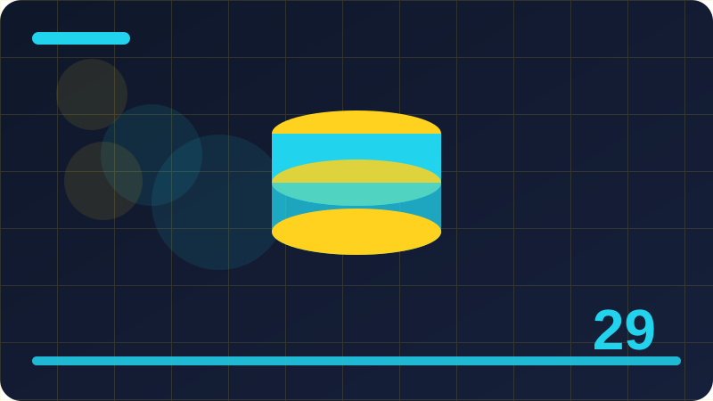

Chapter 29: Dates, Times and Formatting

Section 1: Why Dates Are Harder Than They Look
Dates seem simple, because everyone uses them every day, but programming with dates is surprisingly tricky, since calendars, timezones, daylight saving, leap years, and month lengths all complicate what looks like straightforward arithmetic. Adding one day to a date is not always adding twenty-four hours, since a daylight saving transition can make a day twenty-three or twenty-five hours long, and adding one month to January 31st has no obvious answer, since February has no 31st, which forces a choice between February 28th and March 3rd. These edge cases mean that date code written with simple number arithmetic, such as adding seconds or days as integers, will be wrong in subtle ways that appear only on certain dates, often months after the code is written. Swift's date tools, including Date, Calendar, and DateFormatter, exist to handle these complexities correctly, by using calendar rules instead of naive arithmetic, and learning to use them, rather than hand-rolling date math, is the central lesson of this chapter. Dates reward using the right tools, and punish shortcuts, which is why they deserve a whole chapter.
Timezones add another layer of difficulty, since the same moment in time has different clock readings in different places, and a date that means morning in Lagos means night in another city, which matters whenever programs serve users in multiple places or store times that must be interpreted consistently. A program that stores a meeting time as a clock reading without a timezone will be ambiguous, since readers in different zones will interpret it differently, while a program that stores the moment itself, with timezone information for display, can show the correct local time everywhere. Swift's Date represents a moment in time, independent of timezone, while formatters and calendars apply timezones for display and calculation, which is a clean separation that prevents many timezone bugs, as long as you understand which part holds the moment and which part holds the presentation. Confusing moments with clock readings is the most common timezone mistake, and this chapter will teach you to keep them distinct, by thinking in moments for storage and in local times for display.
Locales and calendars add further complexity, since different cultures use different calendars, different first days of the week, different date formats, and different month and weekday names, and a program that assumes one culture's conventions will confuse or exclude users from others. Swift's Calendar and Locale types handle these variations, by providing calendar calculations that respect the user's calendar, and formatters that produce dates in the user's language and format, which is why you should use them instead of hard-coding formats or weekday assumptions. A date format like month/day/year, common in one country, is day/month/year in another, and a program that hard-codes one order will misinterpret dates for users in the other, which can cause real errors, such as scheduling a meeting on the wrong day. Using locale-aware formatters, rather than fixed formats, prevents these errors, and it makes programs welcoming to users worldwide, which is a professional standard for date handling. Dates are cultural as well as mathematical, and Swift's tools respect that.
import Foundation
let now = Date()
print(now)Check: Why is adding 24 hours not always the same as adding one calendar day?
Section 2: Date in Plain Words
Date is Swift's type for a specific moment in time, independent of calendars, timezones, and formatting, and you can think of it as a single point on a timeline that stretches from the past into the future. Internally, a Date is stored as a number of seconds from a reference moment, which is January 1, 2001, in Swift's reference, although that detail rarely matters, since you work with Dates through calendars and formatters, not through raw seconds. A Date does not itself know what day, month, or year it is, since those depend on a calendar and a timezone, which are applied when you ask a Calendar to break a Date into components, or when you ask a formatter to display it. This separation is powerful, because the same Date can be displayed as different days in different timezones, correctly, since the moment is fixed while its calendar interpretation varies. Think of Date as the moment, and calendars and formatters as the lenses that interpret it for humans.
Creating the current moment is the simplest Date operation, written as Date(), which gives you the instant when that code runs, and which is the starting point for most date programs, such as stamping a note with its creation time or measuring how long an operation takes. Dates can also be created from components, such as a year, month, and day, through a Calendar, which you will learn in later sections, or from strings, through a formatter, which parses a date string according to a format, and both methods produce Dates that represent specific moments. Comparing Dates is straightforward, since they can be compared with operators like less-than and greater-than, which compare moments, so that an earlier moment is less than a later one, regardless of timezone or format, which is the correct way to check deadlines, sort events, or find the latest note. Date comparison by moment is reliable, while comparison by formatted strings is not, since string order depends on format, which is a mistake to avoid. Compare moments, not strings, for date logic.
Dates are value types in Swift, which means they are copied when assigned or passed, rather than shared, so changing one Date variable does not affect another, which is safe and predictable for date calculations. A Date is also immutable in the sense that its operations return new Dates rather than modifying the original, such as adding days through a Calendar, which returns a new Date, leaving the original unchanged, which prevents accidental mutation bugs. This immutability suits date work, since calculations often produce several derived dates from one starting date, such as a start, an end, and a deadline, and each should be independent, without affecting the others. When you work with Dates, think in terms of creating new moments from old ones, rather than modifying moments in place, which is a functional style that Swift's date APIs encourage. Immutable moments, derived through calendars, are the safe way to handle time.
A common beginner confusion is between Date and the formatted string that displays it, since a printed Date looks like a string, such as a long description with a timezone, but it is actually a moment that can be formatted in many ways.
import Foundation
let now = Date()
let later = now.addingTimeInterval(3600)
print(later > now)Check: What does a Swift Date actually represent, and what does it not represent on its own?
Section 3: Creating the Current Date
Creating the current date and time is as simple as writing Date(), which returns a Date representing the exact moment that code executes, with precision down to fractions of a second, although most programs display it rounded to seconds or minutes. This current moment is the foundation for timestamps, such as when a note was created, when a task was completed, or when a log event occurred, since stamping an event with Date() records when it happened, in a form that can later be sorted, compared, and displayed. A program that creates a note, for example, can set its created property to Date() at creation time, and that timestamp will travel with the note through saving and loading, if encoded correctly with an ISO8601 strategy, as in the JSON chapter. Current dates are therefore not just for display, but for recording history, which is why they appear in almost every program that handles user data. Date() is a small call with large usefulness, and it should be your default for "now."
The current date's precision deserves a note, since Date() includes sub-second precision, which is more precise than most displays need, and which can cause surprising inequality when comparing two Dates created moments apart, even if they represent the same second to a human. Two Dates created a millisecond apart are not equal, even though they would display as the same second, which matters when testing date code, since a test that creates a Date and immediately compares it with another Date() may fail due to tiny differences. For testing, it is better to create fixed dates from components, or to compare dates with a tolerance, or to compare their formatted strings at the desired precision, rather than expecting exact equality for "now" values. Similarly, when storing "now" for display, rounding to seconds or minutes, through a formatter or through calendar components, produces a cleaner, more human-meaningful timestamp, without the noise of fractions. Precision is useful for measurement, but display usually needs rounding, and testing needs fixed values, so handle "now" appropriately for each use.
Timezones affect how the current Date is displayed, but not the Date itself, since Date() represents the same moment worldwide, while a formatter in Lagos and a formatter in London will display it with different clock times, correctly reflecting local time in each place. This is why Date() is timezone-independent, and why it is safe to store and transmit, since any program, in any timezone, can display it locally and correctly, as long as it uses a formatter with the appropriate timezone. A common mistake is to adjust a Date by adding timezone offsets manually, which is unnecessary and error-prone, since formatters already handle timezones, and manual adjustment double-counts the offset, producing wrong times. Trust formatters for timezone display, and keep Dates as pure moments, without manual offset arithmetic, which is a rule that prevents most timezone bugs. Date() plus a formatter is all you need for correct local "now" display, anywhere in the world.
Creating the current date repeatedly, such as calling Date() in a loop, will produce slightly different moments each time, since time passes between calls, which is correct but can be surprising if you expect a single "now" for a whole operation.
import Foundation
let now = Date()
print("Now: \(now)")Check: Why should a program capture Date() once, rather than calling it repeatedly, for a single logical moment?
Section 4: Creating a Specific Date
Creating a specific date, such as a birthday, a deadline, or a historical date, requires specifying its components, year, month, day, and optionally hour, minute, and second, and asking a Calendar to build a Date from those components. Swift's DateComponents type holds these pieces, with properties for year, month, day, hour, minute, second, and more, and a Calendar's date(from:) method takes components and returns an optional Date, which is nil if the components do not form a valid date, such as February 30th, which does not exist. This optional result is important, since it forces you to handle invalid dates gracefully, with a guard or a fallback, rather than assuming every combination is valid, which is a safety feature that prevents impossible dates from entering your program. Creating specific dates through Calendar and components, rather than through string parsing or arithmetic, is the correct, calendar-aware way, since it respects month lengths, leap years, and calendar rules automatically. Components plus Calendar is the standard recipe for specific dates.
DateComponents values use human conventions, where months are numbered from 1 for January to 12 for December, days from 1 to the month's length, and years as ordinary calendar years, which matches how people think about dates, but which differs from some programming conventions where months start at zero. This human numbering is intuitive, but it requires care, since a month of 0 or 13 is invalid and will produce nil, which is correct, but which can surprise programmers used to zero-based months in other languages. Weekday components, when used, follow the calendar's convention, where Sunday is often 1 in the Gregorian calendar, although this varies by calendar and locale, which is a detail to check when working with weekdays specifically. For year, month, and day, the human numbering is straightforward, and it should be used consistently, with validation through the optional result, so that invalid combinations are caught. Components are human-friendly, and Calendar validates them, which is a good partnership.
A Calendar instance is needed to interpret components, since different calendars, such as Gregorian, Buddhist, or Islamic, have different year, month, and day rules, and the same components can mean different moments in different calendars. In practice, most programs use the current calendar, accessed through Calendar.current, which reflects the user's system calendar, usually Gregorian, and which is the right default for user-facing dates, since it matches the user's expectations. For fixed, interchange dates, such as ISO8601 dates, a Gregorian calendar with a fixed timezone is often used explicitly, to ensure consistent interpretation regardless of the user's settings, which is a detail for advanced date work. For learning programs, Calendar.current is sufficient, and it teaches the habit of going through a calendar, rather than constructing dates directly, which is the calendar-aware approach. Always build specific dates through a Calendar, never through raw arithmetic on a reference date, since arithmetic bypasses calendar rules and produces wrong results on edge cases.
Testing specific date creation should include edge cases, such as February 29th in a leap year versus a non-leap year, January 31st plus one month, and December 31st plus one day, to confirm that Calendar handles them correctly, which it does, by returning valid dates or nil as appropriate.
import Foundation
var components = DateComponents()
components.year = 2026
components.month = 10
components.day = 30
let date = Calendar.current.date(from: components)
print(date as Any)Check: Why should specific dates be built through a Calendar from components, rather than by arithmetic?
Section 5: Date Components: Year, Month, Day
Date components are the individual pieces of a calendar date, such as year, month, day, hour, minute, second, weekday, and more, and Swift's Calendar can break a Date into these pieces, or build a Date from them, which makes components the bridge between moments and human calendar concepts. To extract components, you call Calendar's dateComponents method with a set of desired components, such as [.year, .month, .day], and a Date, and you receive a DateComponents value whose properties hold those pieces, each as an optional Int, since a component may be unavailable for a given calendar or date. Extracting components is how programs display a date's year, calculate an age from a birthdate, group events by month, or check whether a date falls on a particular weekday, all of which require calendar pieces, not just the raw moment. Components turn a moment into meaningful calendar information, which is what users understand, while the moment itself remains the precise, timezone-independent value underneath. Components are the human view of a moment.
The set of components you request matters, since requesting only year, month, and day is efficient and clear for date-only work, while requesting hour, minute, and second as well is needed for time work, and requesting weekday or weekOfYear is needed for calendar views. Requesting unnecessary components is harmless but wasteful, while forgetting a needed component produces nil for that property, which can cause a guard failure or a crash if force unwrapped, so request exactly the components you need, and handle their optionality safely. A common pattern is to request [.year, .month, .day] for a date-only calculation, such as age or due-date grouping, and to request [.hour, .minute] additionally for time display, which keeps the request focused and the code clear. Components are requested as a set, which is a Swift Set of Calendar.Component values, and the syntax for sets, with square brackets, is the same as for arrays, although the semantics are set-like, with no duplicates and no order. Request precisely, handle optionals safely, and components will serve you well.
Components also allow modification, since you can take a Date's components, change one piece, such as setting the day to 1 for the start of a month, or incrementing the month by one, and then ask Calendar to build a new Date from the modified components, which is a technique for date calculations that are component-based, such as finding the first day of a month. This technique is calendar-aware, since Calendar validates the modified components and handles month lengths and leap years, unlike raw arithmetic, which would fail on month ends. For example, to find the start of the current month, you extract year and month from today, set day to 1, and build a Date, which gives the first moment of the month in the calendar's timezone, correctly, even for months of different lengths. Component modification is a powerful pattern for calendar calculations, and it complements Calendar's addition methods, which you will learn next, with modification suiting "set this piece" tasks, and addition suiting "move by this amount" tasks. Use modification for setting, addition for moving, and your date calculations will be clear.
import Foundation
let now = Date()
let parts = Calendar.current.dateComponents([.year, .month, .day], from: now)
print(parts.year as Any, parts.month as Any, parts.day as Any)Check: How do you get a Date's year, month, and day, and why are those values optional?
Section 6: Calendar in Plain Words
Calendar is Swift's type for the rules that define how moments map to human dates, including which calendar system is used, such as Gregorian, how months and years are structured, how weeks are defined, and which timezone applies to calculations. The most common calendar is the Gregorian calendar, used internationally for civil dates, with twelve months, leap years every four years except for century exceptions, and seven-day weeks, although other calendars, such as Buddhist, Islamic, Hebrew, and others, have different structures, and Swift supports them through different Calendar identifiers. Most programs use Calendar.current, which is the user's current calendar, reflecting their system settings, and which is the right default for user-facing dates, since it matches the user's expectations for month lengths, weekdays, and holidays. For fixed, interchange dates, a specific calendar, usually Gregorian with a fixed timezone, is used explicitly, to ensure consistent interpretation regardless of user settings, which is a detail for advanced work. Calendar is the rulebook for dates, and Calendar.current is the user's rulebook.
Calendar's timezone property is crucial, since calendar calculations, such as finding the start of a day or adding a day, depend on timezone, because a day starts at midnight local time, which occurs at different moments in different zones. Calendar.current uses the system's timezone by default, which is correct for user-facing calculations, since users think in local time, while a Calendar created for interchange might use UTC, which is timezone-neutral, for consistent calculations across zones. Changing a Calendar's timezone changes its calculations, so a Calendar should be configured with its intended timezone before use, and it should not be shared between calculations needing different timezones without reconfiguration, which could cause subtle errors. A common pattern is to create a Calendar, set its timezone explicitly, and use it for a specific task, such as UTC calculations for stored dates, while using Calendar.current for display calculations, keeping the two roles separate. Timezone is part of a Calendar's identity, and it should be set deliberately, not left to chance.
Calendar also defines the first weekday, the minimum days in the first week, and other locale-related rules, which affect week calculations, such as which week a date belongs to, and which day starts a week view, and which vary by locale, as mentioned with components. These rules are why week calculations should go through Calendar, rather than through arithmetic on weekdays, since arithmetic assumes a fixed first weekday, while Calendar respects the locale's rule, producing correct weeks for users worldwide. Similarly, Calendar's methods for adding components, finding ranges, and comparing dates all respect its rules, which is why they are preferred over manual arithmetic, which bypasses those rules and produces errors on edges. Calendar is not just a container for components, but an engine for correct date calculations, and learning to use its methods, rather than reinventing them, is the key to reliable date code. Trust Calendar's engine, and your date calculations will respect rules you might not even know exist.
Using Calendar correctly involves a few habits: use Calendar.current for user-facing work, use a specific Gregorian calendar with UTC for interchange work, set timezone explicitly when it matters, and always use Calendar methods for adding, subtracting, and comparing, rather than adding seconds or days as numbers.
import Foundation
let calendar = Calendar.current
print(calendar.identifier)Check: Why do calendar calculations need a Calendar, rather than just numbers?
Section 7: Adding Days, Months and Years
Adding days, months, and years to a date is a calendar calculation, not a simple arithmetic operation, and Swift's Calendar provides date(byAdding:value:to:) for this purpose, which takes a component, such as .day, .month, or .year, a value to add, and a starting Date, and returns an optional new Date. This method respects calendar rules, so adding one day across a daylight saving transition gives the same clock time on the next day, not twenty-four hours later, which may differ by an hour, and adding one month to January 31st gives February 28th or 29th, depending on leap year, rather than an invalid February 31st, which Calendar resolves by clamping to the month's end. These resolutions are sensible and calendar-aware, and they are why Calendar addition is correct where adding seconds would be wrong, since seconds addition ignores daylight saving and month lengths entirely. Adding through Calendar is the only reliable way to move dates by calendar units, and it should be your default for all such calculations, from due dates to anniversaries to recurring events.
Adding negative values subtracts, so adding -1 day gives yesterday, adding -1 month gives last month, and adding -7 days gives a week ago, which is a convenient symmetry that avoids needing separate subtraction methods, although Calendar also provides methods for finding dates by setting components, which suit different tasks. Adding multiple components at once, such as one year and two months, requires either successive additions, or a DateComponents value with multiple fields, passed to date(byAdding:to:), which adds them together in calendar order, handling month lengths and leap years across the combined addition. Successive additions and combined additions can differ on edge cases, such as adding one month and then one day versus adding one month and one day together, although for most dates they agree, and the difference matters only on month ends, where the order of operations affects clamping. For most programs, successive single-component additions are clearest, since each step is visible and testable, while combined additions are more concise for complex intervals. Choose clarity for date addition, as with other code, and test month-end cases when they matter.
Adding time components, such as hours, minutes, and seconds, also goes through Calendar, although for pure time intervals, adding seconds via addingTimeInterval is sometimes appropriate, since time intervals are absolute durations, not calendar units, and they should be used when the intention is "exactly this many seconds later," rather than "same clock time tomorrow." The distinction between calendar addition and time-interval addition is crucial: calendar addition preserves clock time across daylight saving, while time-interval addition preserves elapsed seconds, which differ by an hour on transition days, and choosing the wrong one produces off-by-one-hour bugs that appear only twice a year, making them hard to catch. For due dates, birthdays, and recurring calendar events, use Calendar addition, since users think in calendar units, while for timeouts, elapsed measurements, and precise durations, use time intervals, since those are absolute. Calendar for calendar units, intervals for absolute durations, is a rule that prevents daylight saving bugs, and it should be memorised.
import Foundation
let now = Date()
if let tomorrow = Calendar.current.date(byAdding: .day, value: 1, to: now) {
print(tomorrow)
}Check: Why should adding one month use Calendar, rather than adding 30 days?
Section 8: Finding the Difference Between Two Dates
Finding the difference between two dates means calculating how much time separates them, in units such as days, months, years, hours, or minutes, and Swift's Calendar provides dateComponents(_:from:to:) for this purpose, which takes a set of components, a start date, and an end date, and returns a DateComponents value holding the differences. This method is calendar-aware, so the difference in days between two dates counts calendar days, not just twenty-four-hour periods, which matters across daylight saving, and the difference in months counts calendar months, with month-end handling, rather than thirty-day periods, which would be inaccurate. For example, the difference between January 31st and February 28th is one month by calendar, but twenty-eight days by count, and both answers are correct for different questions, which is why the component set you request matters: request [.month] for calendar months, [.day] for calendar days, and [.hour, .minute] for time differences. Choosing the right components for the question you are asking is the key to meaningful date differences, since different units answer different questions.
DateComponents differences can include multiple units at once, such as years, months, and days together, which Calendar calculates by breaking the interval into the largest units first, then the remainder, similar to how age is expressed as years, months, and days, rather than as a single total. For age calculation, requesting [.year, .month, .day] from a birthdate to today gives an age in years, months, and days, which is human-meaningful, while requesting only [.day] gives the total days lived, which is also meaningful but for a different purpose, such as counting days since birth. The choice of components should follow the display or logic need: use years, months, and days for human ages, total days for day counts, and hours and minutes for durations within a day. Requesting too many components can produce confusing results, since Calendar's breakdown into multiple units follows specific rules, such as months before days, which may not match naive expectations, so request only the units you need, and test the results on known intervals to confirm they match your intention. Precise component requests produce precise differences.
Time intervals offer an alternative way to measure differences, as a single number of seconds between two Dates, obtained by subtracting one Date's time interval from another's, or by using timeIntervalSince, which gives the absolute elapsed seconds, regardless of calendar. Time intervals are ideal for measuring durations, such as how long an operation took, or for countdowns in seconds, since they are precise and simple, but they are not ideal for calendar differences, since converting seconds to days by dividing by 86400 ignores daylight saving, giving wrong day counts on transition weeks. For calendar questions, such as "how many days until a deadline," use Calendar components, while for absolute questions, such as "how many seconds did this take," use time intervals, which is the same distinction as for addition, applied to differences. Calendar for calendar differences, intervals for absolute durations, is the rule for both adding and differencing, and it prevents the most common date-difference bugs. Choose the tool that matches the question, and the answer will be correct.
import Foundation
let calendar = Calendar.current
let start = Date()
if let end = calendar.date(byAdding: .day, value: 5, to: start) {
let diff = calendar.dateComponents([.day], from: start, to: end)
print(diff.day as Any)
}Check: Why should calendar differences use Calendar components, rather than dividing seconds by 86400?
Section 9: Comparing Dates
Comparing dates means determining whether one moment is earlier, later, or equal to another, and Swift Dates support comparison operators, such as <, >, and ==, which compare moments directly, regardless of timezone, format, or calendar, since moments are absolute. This direct comparison is the correct way to check deadlines, such as whether today is before a due date, to sort events chronologically, by sorting Dates ascending, and to find the earliest or latest date in a collection, using min and max, all of which work on Dates as values. Comparing formatted date strings, by contrast, is unreliable, since string order depends on format, and a format like day/month/year sorts differently from chronological order, which is a common mistake that produces wrong sorts and wrong deadline checks. Always compare Dates, not their string representations, for logic, and use strings only for display, which is a rule that applies to all date comparisons, from simple before-or-after checks to complex sorting. Moments compare correctly, strings compare by format, and format order is not time order, except for ISO8601 strings, which are designed to sort chronologically, although even then, Date comparison is clearer and safer.
Equality for Dates means exactly the same moment, including sub-second precision, which is stricter than human equality, where two dates in the same second might be considered equal, even if they differ by milliseconds. For human-level equality, such as checking whether two events happened on the same day, you should compare their calendar components, such as year, month, and day, rather than the Dates themselves, since same-day events at different times are not equal as moments, but are equal as days. Calendar provides isDate(_:inSameDayAs:) for same-day checks, which handles timezones and calendar rules correctly, and similar methods exist for same week, month, or year, although those are less commonly needed. Using Calendar's same-day method, rather than comparing formatted day strings, is both clearer and more correct, since it respects the calendar's day boundaries in the relevant timezone, which string comparison may not. Same moment versus same day are different questions, and they need different comparisons, so choose the comparison that matches the question you are asking.
Sorting dates is a natural extension of comparison, since an array of Dates can be sorted ascending, earliest first, or descending, latest first, using Swift's sorted methods, which rely on Date's comparison, and which produce chronological order reliably. Sorting tasks by due date, notes by creation date, or events by start time all use this pattern, and the sorted result can then be displayed, filtered, or processed in order, which is how timelines, schedules, and histories are built. When sorting by date, consider what to do with nil dates, for tasks without due dates, since nil cannot be compared, and a common approach is to sort dated items first, followed by undated items, or to filter undated items separately, depending on the display need. Handling nils explicitly, rather than force unwrapping or crashing, is part of safe date sorting, and it should be designed, not improvised, when the sort is written. Sort moments for chronology, handle nils explicitly, and your timelines will be correct.
import Foundation
let now = Date()
let later = now.addingTimeInterval(100)
print(now < later)Check: Why should date logic compare Dates, not formatted date strings?
Section 10: Sorting Dates
Sorting dates means arranging a collection of dates, or of objects containing dates, into chronological order, which is fundamental for timelines, schedules, task lists, and histories, where order by time is the primary organisation. Swift's sorted methods work directly on Dates, producing ascending order, earliest first, which is the natural order for upcoming events, while sorted with a greater-than comparison produces descending order, latest first, which suits histories and recent-first lists. Sorting objects by their date properties, such as tasks by due date, uses a closure that compares the objects' date properties, which is the same pattern as sorting by any property, but with the added consideration of nil dates, as in the previous section, which must be handled explicitly. A robust sort for tasks might place dated tasks first, sorted by due date, followed by undated tasks, preserving their original order, which is a clear, documented rule that users can understand. Sorting rules should be explicit and documented, since users will notice order, and unexplained order feels random, even when it is deterministic.
Stable sorting, where elements that compare equal retain their original relative order, is a property of Swift's sorted methods, and it matters for date sorting when several items share the same date, such as tasks due on the same day, which should retain a sensible secondary order, such as insertion order or title order, rather than appearing randomly. To ensure a meaningful secondary order, a sort closure can compare dates first, and fall back to a secondary criterion, such as title, when dates are equal, which produces a deterministic, user-friendly order that does not change unpredictably between runs. Without a secondary criterion, equal dates will retain insertion order due to stability, which is also deterministic, but which may not be the most useful order, since insertion order is not necessarily meaningful to users. Designing sort closures with primary and secondary criteria, such as due date then title, is a small effort that produces polished, predictable lists, which users appreciate, especially for task and event displays. Primary date, secondary title, is a good default for dated lists.
Sorting dates for display often involves grouping, such as grouping tasks by day, week, or month, which is a step beyond simple sorting, since it organises sorted items into sections, each headed by a date or a date range. Grouping can be implemented by sorting first, then iterating and starting a new group whenever the group key, such as the day components, changes, which produces sections in chronological order, each containing its items in order. This grouping pattern is used in calendar views, in task lists grouped by due date, and in logs grouped by day, and it relies on date components for grouping keys, since grouping by raw Date would group by exact moment, which is too fine, while grouping by day components groups by calendar day, which is the human-meaningful unit. Grouping by components, after sorting by moment, is a clean two-step pattern: sort by Date, group by components, which yields sections that are both chronological and human-organised. Sorting plus grouping produces calendar-like views from flat lists, which is a powerful technique for date displays.
import Foundation
let dates = [Date(), Date().addingTimeInterval(100), Date().addingTimeInterval(-100)]
let sorted = dates.sorted()
print(sorted.count)Check: How should a task sort handle tasks that have no due date, compared with dated tasks?
Section 11: DateFormatter in Plain Words
DateFormatter is Swift's tool for converting between Dates and human-readable strings, in both directions: formatting a Date into a string for display, and parsing a string into a Date, according to a format, locale, and timezone that you configure. A formatter has properties for date style and time style, which control whether it shows a full date, a short date, a time, or both, in a locale-appropriate way, and for custom date formats, which are strings of symbols, such as yyyy for year, MM for month, and dd for day, that define an exact output pattern. Formatters are locale-aware by default, which means they produce dates in the user's language and conventions, such as month names in the user's language and day-month order according to locale, which is why they are preferred over manual string building for user-facing dates. For fixed, interchange formats, such as ISO8601, a formatter should be configured with a fixed locale, usually en_US_POSIX, and a fixed timezone, usually UTC, to ensure consistent parsing and formatting regardless of user settings, which is a detail that matters for data interchange. Formatters are the bridge between moments and human text, and they must be configured for their audience, user or machine.
Creating a DateFormatter is simple, but configuring it correctly requires attention, since its default settings may not match your intention, and its behaviour depends on locale, timezone, calendar, and format, all of which interact. A formatter for display should usually use dateStyle and timeStyle, such as .medium for date and .short for time, which produce locale-appropriate strings without needing a custom format, and which adapt automatically to the user's locale, which is ideal for user interfaces. A formatter for parsing a fixed format, such as a date string from a file or an API, should use a custom dateFormat string that matches the input exactly, with a fixed locale and timezone, so that parsing is deterministic and not affected by the user's settings, which could otherwise cause a format to parse differently on different devices. Mixing these two uses, such as using a display formatter to parse fixed data, or a fixed formatter to display to users, causes bugs, since each formatter is configured for a different audience, and using the wrong one produces wrong results. Display formatters for users, fixed formatters for data, is a rule that prevents formatter confusion.
DateFormatter instances are relatively expensive to create, since they load locale and calendar data, so creating a new formatter for every date formatted, such as inside a loop over hundreds of dates, can be slow, and reusing a single formatter instance, configured once, is more efficient. A common pattern is to create a formatter once, as a shared instance or a static property, and reuse it for all formatting in a program, or to create formatters for specific purposes, such as one for display and one for ISO8601, and reuse each, which balances efficiency with clarity. For learning programs with few dates, formatter creation cost is negligible, but learning the reuse habit now prepares you for larger programs where it matters, and it also encourages consistent formatting, since a shared formatter produces consistent output everywhere it is used.
import Foundation
let formatter = DateFormatter()
formatter.dateStyle = .medium
formatter.timeStyle = .none
print(formatter.string(from: Date()))Check: Why should display formatters and fixed-format parsers be configured differently?
Section 12: Formatting a Date for Display
Formatting a date for display means turning a Date moment into a string that a user can read and understand, in their language, with their conventions, and with an appropriate level of detail for the context. A task due date might display as "30 Oct 2026," a meeting time as "30 Oct 2026, 09:00," and a log timestamp as "30 Oct 2026, 09:00:15," each with a different amount of detail, chosen for its use, since too much detail clutters a simple list, while too little detail hides important information for a schedule. DateFormatter's dateStyle and timeStyle provide standard levels, such as .short, .medium, .long, and .full, which produce locale-appropriate strings of increasing detail, without needing custom formats, and which adapt to the user's locale automatically. Using styles, rather than custom formats, for display is recommended, since styles respect locale conventions for order, separators, and names, while custom formats impose one order on all users, which may be wrong for some. Styles for display, custom formats for fixed data, is the rule from the previous section, applied to display choices.
Choosing the right style depends on context, since a list of tasks needs only dates, not times, while a schedule needs both, and a detailed log needs seconds as well, and the style should match the information the user needs to act, not just the data available. A due date displayed with a time, when only the day matters, adds noise, while a meeting displayed without a time is useless, since the user cannot know when to attend, which shows that display detail is a design decision, not a default. Relative formatting, which displays "Today," "Tomorrow," or "Yesterday" for nearby dates, is another display choice that can make dates more human, and Swift provides RelativeDateTimeFormatter for this, which you will learn later, as a complement to DateFormatter for friendly displays. For now, the lesson is to choose display detail deliberately, considering what the user needs to know, and to use styles that adapt to locale, so that the display is both informative and culturally appropriate. Display is design, and date display should be designed for its context.
Locale adaptation in display formatting means that the same Date will produce different strings for users in different locales, such as month names in English versus French, or day-month order versus month-day order, which is correct, since users expect dates in their own conventions. A program that hard-codes English month names or a fixed order will confuse users in other locales, and may even cause errors, such as a user misreading a day-month date as month-day, which is why locale-aware formatters are essential for user-facing dates. DateFormatter's default locale is the user's current locale, which is correct for display, and it should not be overridden for display, except in rare cases where a fixed locale is required for consistency, such as in a shared document where all readers must see the same format. For most displays, trust the default locale, use styles, and let Swift adapt, which is the simplest and most correct approach for international users. Locale-aware display is respectful display, and it should be the default.
import Foundation
let formatter = DateFormatter()
formatter.dateStyle = .long
formatter.timeStyle = .short
print(formatter.string(from: Date()))Check: Why are dateStyle and timeStyle better than a custom format for displaying dates to users?
Section 13: Common Date Formats
Common date formats are the patterns used to write dates as strings, and understanding them helps you read, write, and parse dates correctly, whether they come from files, APIs, or user input. The ISO8601 format, such as 2026-10-30T09:00:00Z, is the international standard for interchange, with year, month, day, a T separator, time, and a timezone indicator, which sorts chronologically as a string and is unambiguous across locales, making it ideal for storage and transmission. A simpler date-only ISO format, such as 2026-10-30, is common for due dates and birthdays, where time does not matter, and it is also sortable and unambiguous, which is why it is preferred for date-only data. Other common formats include day-month-year, such as 30/10/2026, month-day-year, such as 10/30/2026, and written forms, such as 30 October 2026, each with different separators, orders, and month representations, which vary by locale and by system. Recognising these formats, and knowing which are unambiguous, helps you choose and parse dates safely, since ambiguous formats, like 10/11/2026, can mean October 11th or November 10th, depending on locale, which is a dangerous ambiguity.
DateFormatter format symbols define custom formats, with yyyy for a four-digit year, MM for a two-digit month, dd for a two-digit day, HH for hour in 24-hour time, mm for minutes, and ss for seconds, among others, and combining them with separators produces a format string, such as "yyyy-MM-dd" for ISO date-only, or "dd/MM/yyyy" for day-month-year. These symbols are case-sensitive, since MM means month while mm means minutes, and HH means 24-hour hour while hh means 12-hour hour, which are distinctions that cause bugs when confused, such as a format that swaps month and minutes, producing nonsense dates. Learning the common symbols, and checking them carefully when writing a format, prevents these bugs, and testing a format with known dates, such as a date with month 10 and minutes 30, reveals swaps immediately, since the output will show the wrong values. Format symbols are a small language, and like any language, they require precision, since a single wrong letter changes the meaning entirely. Write formats carefully, test them with distinctive dates, and your parsing and formatting will be correct.
Ambiguity in date formats is a serious problem, since a string like 03/04/2026 is ambiguous between March 4th and April 3rd, and a program that parses it with the wrong locale or format will produce a valid but wrong date, without any error, which is worse than a failure, since the error is silent. The defence against ambiguity is to prefer unambiguous formats, such as ISO8601, for storage and interchange, and to use locale-aware parsing for user input, where the formatter's locale disambiguates according to the user's conventions, rather than assuming one order universally. When a program must accept user-entered dates, it should either use a date picker, which avoids string ambiguity entirely, or parse with the user's locale and validate the result with the user, such as by displaying the parsed date back for confirmation, which catches misinterpretations. Never assume a day-month order for user input without considering locale, since that assumption will be wrong for many users, and the resulting wrong dates can cause missed appointments or incorrect records.
import Foundation
let formatter = DateFormatter()
formatter.dateFormat = "yyyy-MM-dd"
print(formatter.string(from: Date()))Check: Why is ISO8601 safer than day/month/year for storing dates?
Section 14: Parsing a String into a Date
Parsing a string into a Date means interpreting text as a moment, according to a format, locale, and timezone, and Swift's DateFormatter performs this with its date(from:) method, which returns an optional Date, nil when the string does not match the format. Parsing is the reverse of formatting, and it requires the same configuration as formatting for the same format, since a formatter configured for "yyyy-MM-dd" will parse "2026-10-30" correctly, but will fail on "30/10/2026," which uses a different order and separator, which is correct strictness, since the formats differ. A common parsing mistake is to use a display formatter, configured with styles, to parse a fixed-format string, which fails or misparses, since styles produce locale-dependent output that may not match the fixed input, and the fix is to use a dedicated parser formatter, configured with the exact format, locale, and timezone of the input. Parser formatters should use a fixed locale, usually en_US_POSIX, and a fixed timezone, usually UTC, for interchange formats, to ensure deterministic parsing regardless of user settings, which is essential for data files and APIs. Parse with a dedicated, fixed formatter, and parsing will be deterministic.
Handling parsing failures gracefully is essential, since input strings often contain typos, unexpected formats, or empty values, and a nil result from date(from:) should trigger a clear message, a fallback, or a request for correction, rather than a crash from force unwrapping. A guard that checks the parsed Date, with a message naming the input string and the expected format, such as "Could not parse '30/13/2026' as yyyy-MM-dd," helps users correct their input, and helps programmers diagnose format mismatches, since it shows both what was received and what was expected. For user-entered dates, a failed parse might prompt the user to try again, with an example of the expected format, while for file-read dates, a failed parse might skip the record with a warning, or fail the load, depending on the data's importance, as with other loading decisions. Parsing failures are input errors, and they should be handled like other input errors, with clear messages and sensible fallbacks, not with crashes or silent defaults that hide the problem. Parse failures are information, and they should be communicated.
Validating parsed dates semantically, beyond format, is also important, since a string that parses correctly may still represent an impossible or nonsensical date for the program's purpose, such as a due date in the past for a new task, or a birthdate in the future, which are format-valid but logically invalid. After parsing, a program should check the resulting Date against its requirements, with guards for ranges, such as due dates not in the past, or birthdates not in the future, and with messages explaining the requirement, so that logically invalid dates are caught at entry, rather than causing trouble later. This post-parsing validation is the same guard-at-the-door principle applied to dates, and it ensures that dates entering the program are not just well-formed, but also meaningful, which is a higher standard that prevents downstream bugs. Format validation checks syntax, semantic validation checks meaning, and both are needed for robust date input, since a date can be syntactically correct but semantically wrong. Parse for syntax, validate for meaning, and date input will be trustworthy.
import Foundation
let formatter = DateFormatter()
formatter.dateFormat = "yyyy-MM-dd"
formatter.locale = Locale(identifier: "en_US_POSIX")
let date = formatter.date(from: "2026-10-30")
print(date as Any)Check: Why does date parsing return an optional, and how should a nil result be handled?
Section 15: Time Zones in Plain Words
A timezone is a region where clocks show the same local time, offset from Coordinated Universal Time, UTC, by a certain number of hours, sometimes with daylight saving adjustments, and understanding timezones is essential for programs that serve users in multiple places or that store times for later interpretation. UTC is the reference timezone, with no offset, and other timezones are described as UTC plus or minus hours, such as West Africa Time, WAT, which is UTC+1, meaning clocks in Lagos show one hour ahead of UTC, while other zones may be ahead or behind by different amounts, including half-hour offsets in some regions. A moment in time is the same everywhere, but its clock reading differs by timezone, so a Date representing noon UTC is 1pm in Lagos, 7am in New York, and 9pm in Tokyo, all correctly, since each timezone's formatter applies its offset for display. This is why Dates store moments, not clock readings, and why formatters need a timezone to display correctly, since the same moment needs different strings in different zones. Moments are universal, clock readings are local, and timezones translate between them.
Swift's TimeZone type represents a timezone, with identifiers such as "Africa/Lagos" for Lagos, "Europe/London" for London, and "UTC" for Coordinated Universal Time, and with properties for its offset from UTC, its abbreviation, and its daylight saving rules, which vary by date, since offsets change when daylight saving starts or ends. A formatter's timeZone property determines how it displays a Date, so setting it to Africa/Lagos will show Lagos time, while setting it to UTC will show UTC time, for the same Date, which is how a program can display a moment in any zone, by choosing the formatter's timezone. A Calendar's timezone similarly affects its calculations, such as start of day, which occurs at midnight local time, differing by zone, so calendar work should use the appropriate timezone for its purpose, local for user-facing, UTC for interchange. Timezones are not just offsets, but rules that change over time, which is why Swift's TimeZone, with its database of historical and future rules, should be used, rather than hard-coding offsets, which would be wrong during daylight saving transitions. Use TimeZone identifiers, not fixed offsets, for correct timezone handling.
Daylight saving time, which is the practice of advancing clocks by an hour in summer, complicates timezones further, since offsets change twice a year, on dates that vary by region and by year, and since the transition days have 23 or 25 hours, as discussed earlier. Swift's TimeZone and Calendar handle these transitions automatically, when given a timezone identifier, so that adding a day across a transition preserves clock time, and formatting a moment during a transition shows the correct local time, including the ambiguous hour when clocks go back, where the same local time occurs twice. Manual offset arithmetic, such as adding one hour to convert zones, fails during transitions, since the offset itself changes, which is why manual conversion should never be used, and why TimeZone and formatter conversion, which consult the timezone database, are the only correct methods. Daylight saving is a reminder that timezones are rules, not fixed numbers, and that those rules must come from the system database, not from hard-coded assumptions.
import Foundation
let formatter = DateFormatter()
formatter.timeZone = TimeZone(identifier: "Africa/Lagos")
formatter.dateStyle = .medium
formatter.timeStyle = .short
print(formatter.string(from: Date()))Check: Why is a clock reading without a timezone ambiguous, while a Date moment is not?
Section 16: Locales and Language Differences
A locale is a set of conventions for a language and region, including date formats, month and weekday names, number formats, currency, and first weekday, and Swift's Locale type represents it, with identifiers such as "en_NG" for English in Nigeria, "en_US" for English in the United States, and "fr_FR" for French in France. Locales affect date display profoundly, since the same Date will format as "30 Oct 2026" in one locale, "Oct 30, 2026" in another, and "30 octobre 2026" in French, all correctly, according to each locale's conventions, which is why formatters default to the user's locale for display. A program that hard-codes English month names or a fixed date order will be wrong for users in other locales, and may even cause misinterpretation, as with day-month ambiguity, which is why locale-aware formatting is essential for user-facing dates. Locales are not just languages, but full cultural conventions, and respecting them is part of building programs for a global audience, even when the initial audience is local, since programs often grow beyond their first users. Locale-aware dates are respectful dates, and they should be the default for display.
Locale also affects parsing, since user-entered dates follow locale conventions, and a parser configured with the user's locale will interpret "10/30/2026" as October 30th in the US, but will reject it or interpret it differently in a locale where day comes first, which is correct, since the input's meaning depends on the user's conventions. For fixed-format data, such as ISO8601 from files or APIs, locale should be fixed to en_US_POSIX, to ensure deterministic parsing regardless of user locale, which is the opposite rule from display, where locale should follow the user. This distinction, user locale for display and input, fixed locale for data, is crucial, since mixing them causes bugs: a data parser using the user's locale may parse ISO dates incorrectly on some devices, while a display formatter using a fixed locale will show foreign formats to local users. Locale choice follows audience, as with timezone and format choices, and getting it right requires thinking about who will read or write the date string, user or machine. Audience determines locale, and locale determines interpretation.
First weekday, week numbering, and calendar differences are further locale effects, since some locales start weeks on Monday, others on Sunday, and some use different calendars entirely, such as the Buddhist calendar in Thailand, where years are numbered differently, although the Gregorian calendar is used internationally for most civil purposes. Swift's Calendar.current reflects the user's locale calendar, which is usually Gregorian, but which may differ, and programs that assume Gregorian year numbering or Monday-first weeks may be wrong for users with different settings, although such cases are rare for the programs in this book. For most date work, using Calendar.current and locale-aware formatters will handle these variations automatically, without needing to know the details, which is the benefit of using system tools rather than hard-coding conventions. The lesson is not to memorise every locale's rules, but to trust Swift's locale and calendar tools to apply them, and to avoid hard-coding any convention that varies by locale, such as month names, date order, or first weekday. Trust system locale tools, and your dates will adapt correctly worldwide.
import Foundation
let formatter = DateFormatter()
formatter.locale = Locale(identifier: "en_NG")
formatter.dateStyle = .medium
print(formatter.string(from: Date()))Check: Why should display formatters use the user's locale, while data parsers use a fixed locale?
Section 17: Relative Dates: Today, Yesterday, Tomorrow
Relative dates are human-friendly ways to refer to nearby dates, such as today, yesterday, tomorrow, this week, or next month, which are more intuitive than absolute dates for close events, since users think in relative terms for immediate plans. Swift provides RelativeDateTimeFormatter, which formats a Date relative to now, producing strings like "today," "yesterday," "tomorrow," "in 2 days," or "3 days ago," depending on the date's distance from now and the formatter's configuration, in the user's locale. Relative formatting is ideal for task lists, messages, and activity feeds, where recent events are described relatively, while older events use absolute dates, since relative terms lose meaning as distance grows, and a task due "in 2 days" is clearer than a task due on a specific date that the user must compare with today mentally. Combining relative and absolute formats, such as showing relative for near dates and absolute for far dates, is a common display pattern that balances friendliness with precision, and it should be considered for date displays in user interfaces. Relative for near, absolute for far, is a display rule that matches human thinking.
Calendar methods also support relative date logic, such as checking whether a Date is today, yesterday, or tomorrow, with methods like isDateInToday, isDateInYesterday, and isDateInTomorrow, which handle timezone and calendar rules correctly, and which are useful for grouping or filtering by relative day, without needing to format strings. For example, a task list might group tasks into sections for overdue, today, tomorrow, and later, using these Calendar checks, which is a clear, human-organised view that users find helpful, since it answers "what do I need to do now?" at a glance. These checks use the calendar's day boundaries in the relevant timezone, so a task due at 11pm today is still today, even though it is only hours away, while a task due at 1am tomorrow is tomorrow, even though it is also hours away, which is the calendar-day logic that users expect, rather than a 24-hour window. Calendar relative checks are the logic counterpart to relative formatting, providing boolean tests for grouping, while formatters provide strings for display, and together they enable relative date features. Logic with Calendar, display with formatters, is the pattern for relative dates.
Relative formatting has limits, since it becomes vague for distant dates, such as "in 3 months," which is less precise than an absolute date, and since it depends on "now," which changes over time, so a relative string that is correct today may be wrong tomorrow, if stored as a string rather than recomputed from the Date. Relative strings should therefore be computed at display time, from the stored Date and the current moment, rather than stored as text, since stored relative strings become stale, while stored Dates remain correct and can be re-formatted relatively at any time. This is a general principle for derived display: store the source data, such as Dates, and derive displays, such as relative strings, on demand, so that displays stay fresh as time passes, which applies to ages, countdowns, and other time-derived displays as well. Store moments, derive relatives, is a rule that keeps date displays accurate over time, and it should be followed for all relative date features.
import Foundation
let formatter = RelativeDateTimeFormatter()
formatter.unitsStyle = .full
print(formatter.localizedString(for: Date(), relativeTo: Date()))Check: Why should relative date strings be computed at display time, rather than stored?
Section 18: Weekdays and Months by Name
Weekday and month names are the human labels for calendar units, such as Monday, Tuesday, October, and November, and Swift provides them through DateFormatter's weekday and month symbols, and through Calendar's component values, which together let programs display and work with named days and months. DateFormatter has properties like weekdaySymbols, shortWeekdaySymbols, monthSymbols, and shortMonthSymbols, which return arrays of names in the formatter's locale, ordered according to the calendar, starting with Sunday for Gregorian weekday symbols, although the order should be checked, since it follows the calendar's convention, not necessarily the locale's first weekday. These symbol arrays are useful for building calendar views, pickers, and headers, where weekday or month names are needed as labels, without hard-coding English names, which would be wrong for other locales. Using formatter symbols, rather than hard-coded names, ensures that calendar displays adapt to the user's language, which is essential for international programs, and which is a simple habit with large benefits. Names from formatters, numbers from components, is the rule for weekday and month labels.
Weekday components, obtained from Calendar, are numbers, such as 1 for Sunday in the Gregorian calendar, through 7 for Saturday, which can be used to index into weekday symbol arrays, although the indexing requires care, since symbol arrays are zero-based while weekday components are one-based, so weekday 1 corresponds to index 0, which is an off-by-one detail that causes bugs if forgotten. A safer pattern is to use a formatter to format a Date directly into a weekday name, with a format like "EEEE" for full weekday name, or "EEE" for short name, which avoids manual indexing and handles locale correctly, since the formatter knows the mapping. For calendar views that need all weekday names as headers, symbol arrays are appropriate, with careful indexing, while for displaying a single date's weekday, formatting the date directly is simpler and safer. Choose the method that matches the need: formatter for single dates, symbols for headers, with indexing care, and weekday displays will be correct. Direct formatting avoids indexing bugs, while symbols serve header needs.
Month names follow a similar pattern, with monthSymbols providing full names like January, February, and shortMonthSymbols providing abbreviations like Jan, Feb, in the formatter's locale, ordered from January to December for Gregorian calendars, which matches month components 1 through 12, with the same one-based to zero-based indexing care. Formatting a single date's month, with a format like "MMMM" for full month name, is simpler than indexing, and it handles locale correctly, while symbol arrays are useful for month pickers or headers that need all months. Standalone month names, used without a day, may differ from format month names in some languages, where grammatical case changes the form, and Swift's standalone symbols, such as standaloneMonthSymbols, handle this distinction, although for English and many languages, the two are identical, which is why the distinction is often overlooked. For programs targeting multiple languages, using standalone symbols for standalone month displays, such as in a picker, is more correct, while format symbols suit dates like "30 October," where the month appears with a day. Standalone versus format symbols is a locale nuance worth knowing for polished international displays.
import Foundation
let formatter = DateFormatter()
formatter.dateFormat = "EEEE, MMMM d"
print(formatter.string(from: Date()))Check: Why should weekday and month names come from a formatter, rather than a hard-coded list?
Section 19: Start and End of Day
Start of day is the first moment of a calendar day, usually midnight local time, and end of day is the last moment, or more precisely, the start of the next day, which is the boundary used for day-based calculations, since days are intervals from one midnight to the next. Swift's Calendar provides startOfDay(for:), which returns the Date representing midnight at the start of the given date's day, in the calendar's timezone, handling daylight saving correctly, since midnight on transition days is still well-defined, even when the day has 23 or 25 hours. End of day is often represented as the start of the next day, obtained by adding one day to the start of day, rather than as 23:59:59, since the next-day start is precise and avoids missing the final second or millisecond, which a 23:59:59 representation would, and since interval comparisons using start-inclusive, end-exclusive ranges are cleaner. For example, to check whether an event falls on a given day, you check whether its Date is greater than or equal to the day's start and less than the next day's start, which is a half-open interval that covers the whole day exactly, without gaps or overlaps. Start-of-day plus next-day-start is the precise way to define a day as an interval.
Start of day is useful for grouping events by day, for filtering tasks due today, for resetting daily counters, and for any logic that cares about calendar days rather than exact moments, since it converts a moment into its day's boundary, which can then be compared. A task due today, for example, might be defined as a task whose due date's start of day equals today's start of day, which is the same-day check in interval form, and which handles times correctly, since a task due at 9am and a task due at 9pm on the same day share the same start of day, even though their moments differ. Similarly, a daily log might group entries by their start of day, so that all entries from one calendar day fall into one group, regardless of their exact times, which is a natural organisation for human activity. Start of day converts moments to days, which is a common reduction in date logic, and Calendar's method does it correctly across timezones and daylight saving, which manual midnight calculation, such as setting hour to zero, might not, if done without considering timezone. Use Calendar's startOfDay, not manual hour setting, for day boundaries.
End of day, as next-day start, is useful for deadlines, such as "due by end of today," which means before tomorrow's start, not at a specific clock time, and for ranges, such as "events this week," which can be defined as from the week's start to next week's start, using half-open intervals that tile time without gaps. Half-open intervals, where the start is inclusive and the end is exclusive, are a standard technique for time ranges, since they allow consecutive ranges, such as days, weeks, or months, to meet exactly at their boundaries, without overlapping or leaving gaps, which is essential for correct grouping and filtering.
import Foundation
let start = Calendar.current.startOfDay(for: Date())
print(start)Check: Why is end of day usually represented as the start of the next day, rather than 23:59:59?
Section 20: Start and End of Month
Start of month is the first moment of a calendar month, at midnight on the first day, and end of month is the start of the next month, following the same half-open interval pattern as days, which together define a month as a precise interval for grouping, filtering, and reporting. Swift's Calendar does not provide a direct startOfMonth method, but it can be derived by extracting year and month components from a Date, setting day to 1, and building a Date from those components, which gives the month's start, correctly handling month lengths and leap years through Calendar validation. End of month is then the start of the next month, obtained by adding one month to the start, which Calendar handles correctly, even for December, where adding one month rolls over to January of the next year, which is a year-boundary case that manual arithmetic might mishandle. Month intervals, like day intervals, should be half-open, from month start inclusive to next month start exclusive, so that months tile time without gaps or overlaps, which is essential for monthly reports, billing periods, and grouping by month. Month start via components, month end via next start, is the standard pattern for month intervals.
Month length, which is the number of days in a month, varies by month and by leap year for February, and Calendar provides range(of:in:for:) to find it, such as the range of days in a given month, which returns the count correctly for any month and year, without needing to hard-code month lengths or leap rules. Hard-coding month lengths, such as assuming February always has 28 days, is a classic date bug that fails in leap years, while Calendar's range method handles leap years automatically, which is why it should always be used for month lengths, rather than a lookup table or a fixed value. A program that displays a calendar view, for example, needs the month's length to know how many day cells to draw, and it should obtain it from Calendar, not from a hard-coded array, which would be wrong for February in leap years and for calendars other than Gregorian. Month length from Calendar, not from memory, is a rule that prevents leap-year bugs, which are among the most common date errors, since they appear only every four years and are easy to forget. Trust Calendar for month lengths, and leap years will be handled.
Start and end of month are useful for monthly summaries, such as counting tasks completed in a month, summing hours in a month, or listing events in a month, where the interval defines which records belong to the month, by checking whether each record's Date falls within the half-open month interval. This interval check, using start inclusive and next start exclusive, is precise and handles records at midnight boundaries correctly, unlike a check based on month components alone, which might mishandle timezone edge cases, although component checks are also valid for many purposes. For reporting, month intervals provide a clean way to partition time, since consecutive months' intervals meet exactly, ensuring that every record belongs to exactly one month, with no double-counting or gaps, which is essential for accurate totals.
import Foundation
var components = DateComponents()
components.year = 2026
components.month = 10
components.day = 1
let start = Calendar.current.date(from: components)
print(start as Any)Check: How do you find a month's start and end, and why should the end be the next month's start?
Section 21: Working with Times Only
Working with times only means handling clock times, such as 09:00 or 14:30, without a specific date, which arises in schedules, opening hours, alarms, and recurring daily events, where the time of day matters but the date varies. Swift has no dedicated time-only type in its standard library, so times-only are usually represented as DateComponents with hour and minute, or as a Date on a reference day with the desired time, or as a simple struct with hour and minute properties, depending on how the time will be used. DateComponents with hour and minute is a natural representation, since it holds exactly the time pieces, without implying a date, and it can be combined with a date's components to build a full Date for a specific day, which is how recurring events are scheduled: take today's date components, replace hour and minute with the event's time, and build a Date for today at that time. This combination pattern, date components plus time components, is the standard way to handle times-only in Swift, and it respects calendar and timezone rules through Calendar. Times-only as components, combined with dates when needed, is a clean approach.
Comparing times-only requires care, since a time like 09:00 on one day is not directly comparable with 09:00 on another day as a moment, but as a clock time, 09:00 is earlier than 14:00 regardless of date, which is a comparison of hour and minute components, not of Dates. A program that checks whether the current time is within opening hours, for example, should extract the current hour and minute components, and compare them with the opening and closing hour and minute components, rather than comparing full Dates, since the dates would differ and confuse the comparison. This component comparison is straightforward: compare hours first, then minutes, which gives the correct clock-time order, and it handles times that cross midnight, such as opening hours from 22:00 to 02:00, with special logic, since a simple range check fails when the range wraps past midnight, requiring an or condition instead of an and. Times-only logic is component logic, not moment logic, and recognising that distinction prevents bugs where date parts interfere with time comparisons. Compare clock components for times-only, moments for dated events, is the rule.
Formatting times-only for display uses DateFormatter with timeStyle, or with a custom time format like "HH:mm" for 24-hour time, or "h:mm a" for 12-hour time with AM/PM, depending on locale and user preference, since time display conventions vary, with 24-hour time common in many countries and 12-hour time common in others. Locale-aware timeStyle, such as .short, adapts to the user's locale automatically, producing the appropriate hour format and AM/PM markers, which is preferred for user-facing times, while fixed formats are used for data interchange, where consistency matters more than locale adaptation. A time-only display, such as "09:00" for a meeting, should use the user's locale style, so that users see times in the format they expect, which is a small courtesy that prevents misreading, such as confusing 09:00 with 9pm in a 12-hour context. Time display, like date display, should follow locale styles for users, and fixed formats for data, which is the consistent formatter rule applied to times.
import Foundation
var time = DateComponents()
time.hour = 9
time.minute = 30
print(time.hour as Any, time.minute as Any)Check: How do you represent a time of day without a date in Swift, and how do you combine it with a date?
Section 22: Durations in Plain Words
A duration is a length of time, such as two hours, three days, or forty-five minutes, as opposed to a moment, which is a point in time, and distinguishing durations from moments is essential for correct date code, since they are different kinds of values with different operations. Swift represents durations in several ways, including TimeInterval, which is a Double number of seconds, DateComponents with fields like hour, minute, or day, and, in newer Swift, the Duration type, although TimeInterval and components are the most common in the standard date tools covered here. A TimeInterval of 3600 seconds means one hour, regardless of calendar or timezone, which makes it ideal for measuring elapsed time, timeouts, and precise intervals, while a DateComponents duration of one day means one calendar day, which may be 23, 24, or 25 hours depending on daylight saving, which makes it ideal for calendar intervals like due dates. Choosing between seconds and calendar components for a duration depends on whether the duration is absolute or calendrical, which is the same distinction as for addition and differences, applied to durations themselves. Absolute durations in seconds, calendar durations in components, is the rule for duration representation.
Adding a duration to a moment produces a new moment, and the method depends on the duration's kind: adding a TimeInterval uses addingTimeInterval, which adds exact seconds, while adding DateComponents uses Calendar's date(byAdding:to:), which adds calendar units with calendar rules, as in the addition section. These two additions can differ, as with daylight saving, where adding a one-day component preserves clock time, while adding 86400 seconds preserves elapsed time, differing by an hour on transition days, which is why the duration kind must match the intention: calendar duration for "same time tomorrow," seconds duration for "exactly 24 hours later." A program that confuses these, such as using seconds for a daily reminder, will drift by an hour after a transition, which users will notice as a reminder arriving at the wrong clock time, while a program that uses calendar components for a timeout, such as "exactly 60 seconds," might be affected by clock adjustments, although such effects are rare for short timeouts. Duration kind follows intention, and intention should be stated clearly in code, through the choice of method and type, so that readers understand whether a duration is calendrical or absolute.
Measuring a duration between two moments, as a TimeInterval, is done by subtracting Dates, or by using timeIntervalSince, which gives seconds, while measuring as calendar components uses Calendar's dateComponents(_:from:to:), which gives years, months, days, hours, and minutes, as in the difference section. The seconds measurement is precise and simple, suitable for performance timing and countdowns, while the components measurement is human-meaningful, suitable for displaying "2 days, 3 hours" rather than "183600 seconds," which users would find unhelpful. Converting between seconds and human units requires care, since dividing seconds by 86400 for days ignores daylight saving, while Calendar components handle it, so human durations should come from Calendar, not from seconds division, which is a recurring lesson in this chapter.
import Foundation
let duration: TimeInterval = 3600
print("One hour in seconds: \(duration)")Check: What is the difference between a duration in seconds and a duration in calendar days?
Section 23: Measuring Elapsed Time
Measuring elapsed time means recording how long an operation, an event, or a period lasts, by capturing a start moment, capturing an end moment, and calculating the difference, which is a fundamental technique for performance measurement, for timers, and for tracking time spent on tasks. The basic pattern is to store Date() at the start, perform the work, store Date() at the end, and compute end.timeIntervalSince(start), which gives the elapsed seconds as a Double, with sub-second precision, suitable for measuring operations that take seconds or fractions of a second. For longer periods, such as tracking time spent on a task over days, the same pattern applies, with start and end Dates stored, possibly in a file, and the difference calculated when needed, using Calendar components for human durations, or TimeInterval for precise seconds, depending on the display need. Elapsed time measurement is simple in concept, but it requires care about what is being measured, since including setup or teardown in the measurement, or measuring across a system clock change, can distort results, which is why measurement code should be focused and, for performance, should use monotonic clocks where available, although Date is sufficient for learning programs. Start, work, end, difference, is the elapsed-time pattern.
For performance measurement, where the goal is to compare code speeds or to find slow operations, elapsed time with Date is a starting point, but it has limits, since system clock adjustments, such as daylight saving or network time sync, can affect Date-based measurements, and since Date precision, while sub-second, may not be sufficient for very fast operations that take microseconds. Swift's continuous clock, available in newer versions, provides a monotonic time source that is not affected by system clock changes, and which is preferred for performance measurement, although it is beyond this chapter's standard date tools, and Date-based measurement remains useful for coarse timing, such as operations taking seconds or more. For learning programs, Date-based elapsed time is sufficient, and it teaches the pattern without requiring advanced clock APIs, while for production performance work, monotonic clocks should be investigated, as part of the performance chapter later. Measure coarsely with Date, precisely with monotonic clocks, is a guideline that balances simplicity with accuracy, depending on the measurement's purpose. Elapsed time for user-facing durations, such as task timers, is well-served by Date, since users care about wall-clock time, not monotonic precision.
Displaying elapsed time should use human units, such as minutes and seconds for short durations, or hours and minutes for longer ones, rather than raw seconds, since users understand "2 minutes 30 seconds" far better than "150 seconds," even though both represent the same duration. Formatting elapsed time can be done manually, by converting seconds into minutes and seconds with division and remainder, for simple cases, or with a formatter for more complex cases, such as including hours and days, which is covered in the duration formatting section. For task timers, where elapsed time accumulates across sessions, the total should be stored as a sum of intervals, or as start and end pairs, and displayed as a running total, which requires careful accumulation to avoid double-counting or losing time when the program closes unexpectedly.
import Foundation
let start = Date()
let end = start.addingTimeInterval(150)
let elapsed = end.timeIntervalSince(start)
print("Elapsed: \(elapsed) seconds")Check: How do you measure how long an operation takes, using Dates?
Section 24: Dates in Files and JSON
Dates in files and JSON require a storage format that preserves the moment accurately, is human-readable where possible, and can be parsed back reliably, which is why ISO8601 strings are the recommended format for dates with times, and yyyy-MM-dd strings for date-only values, as discussed in the formats and JSON chapters. When a Swift program saves a Date to a JSON file, it should use a JSONEncoder with an ISO8601 date strategy, which encodes Dates as ISO8601 strings, and when loading, it should use a JSONDecoder with the matching ISO8601 strategy, so that the round-trip preserves the moment exactly, including timezone information, which ISO8601 strings carry as Z or as an offset. For plain text files, where dates appear as lines or fields, the same ISO formats should be used, with a DateFormatter configured for ISO8601 and a fixed locale, for both writing and parsing, so that file dates are consistent and unambiguous, regardless of user locale. Consistent ISO formats for file and JSON dates prevent the locale and ambiguity bugs that arise from using display formats for storage, which is a critical distinction: display formats are for users, ISO formats are for files, and mixing them causes data corruption. ISO for storage, styles for display, is the rule for dates in files.
Date-only values in files, such as due dates or birthdays, should be stored as yyyy-MM-dd strings, without time or timezone, since the value represents a calendar day, not a moment, and storing it with a time would imply a precision that the data does not have, and could cause timezone shifts, where a date stored as midnight UTC displays as the previous day in a western timezone. A due date of 2026-10-30, stored as a date-only string, should be parsed into a Date representing that day in the relevant timezone, usually the user's local timezone, for display and comparison, using a Calendar and components, rather than as a moment at midnight UTC, which would shift. This date-only handling requires care, since Swift Dates are moments, and representing a day as a moment inevitably involves a timezone choice, which should be the user's local timezone for user-facing days, so that the day displays correctly. Date-only storage as yyyy-MM-dd, parsed in local time, is a pattern that preserves day meaning without timezone shifts, and it should be used for birthdays, due dates, and other day-only data. Days as date-only strings, moments as ISO8601, is the storage distinction for dates.
Timestamps in logs and files, which record when events occurred, should be stored as ISO8601 strings with timezone, or as seconds since a reference, depending on whether human readability or compactness matters more, with ISO8601 preferred for logs that humans will read, since its sortable, readable format aids debugging. Log timestamps should include timezone information, so that logs from different zones can be correlated, and they should use a consistent format, such as ISO8601 with UTC, to avoid ambiguity when logs are combined, which is a practical consideration for programs that run in multiple zones or that share logs.
import Foundation
let formatter = ISO8601DateFormatter()
print(formatter.string(from: Date()))Check: Why should dates stored in files use ISO8601, rather than a display format?
Section 25: Storing Dates as Text Safely
Storing dates as text safely means choosing a text representation that is unambiguous, sortable, parseable, and stable across locales and timezones, which is why ISO8601 and yyyy-MM-dd are recommended, as in the previous section, and why display formats and locale-dependent formats should never be used for storage. A safe date text should sort chronologically as a string, so that sorting file lines by date text gives chronological order, which ISO8601 and yyyy-MM-dd both do, since their year-month-day order with zero-padded numbers ensures lexicographic order matches time order, while formats like dd/MM/yyyy do not sort chronologically, since day comes first, which scrambles chronological order when sorted as text. Sortability is a practical benefit for file-based date handling, since it allows simple text sorting and searching to work chronologically, without parsing dates first, which is useful for logs and lists stored as text. Safe date text is sortable, unambiguous, and locale-independent, which are three properties that ISO formats provide and that display formats do not, making ISO the safe choice for storage. Sortable, unambiguous, locale-independent, is the checklist for safe date text.
Zero-padding is a detail of safe date text that matters, since ISO formats pad month, day, hour, minute, and second to two digits, so that "2026-01-05" sorts before "2026-10-30," correctly, while unpadded formats like "2026-1-5" would sort incorrectly, since "1" as a string compares differently from "01," and since parsers expecting two digits might fail on unpadded values. DateFormatter's ISO and yyyy-MM-dd formats produce zero-padded output automatically, so using a formatter, rather than building date strings manually with interpolation, ensures padding, which is another reason to use formatters for storage, not manual string building. Manual date strings, such as "\(year)-\(month)-\(day)," are a common source of unsafe date text, since they omit padding, omit timezone, and vary by locale, producing strings that are hard to parse and sort, while formatter-produced strings are consistent and safe. Use formatters for date text, even for storage, and your date strings will be padded, ordered, and parseable, which is the safe path. Formatters ensure safe date text, manual strings risk unsafe text, which is a rule worth following strictly.
Timezone in stored date text should be explicit, for moments, as in ISO8601 with Z or an offset, so that the moment can be reconstructed exactly, regardless of the reader's timezone, while date-only text should omit timezone, as discussed, to indicate that it represents a day, not a moment. A stored moment without timezone, such as "2026-10-30 09:00" with no zone, is ambiguous, since readers in different zones will interpret it as local time in their zone, producing different moments, which is a data corruption risk when files are shared or moved. Explicit timezone in moment text removes this ambiguity, since the offset tells the parser exactly which moment is meant, and ISO8601's Z for UTC is the clearest such indicator, since UTC is universal. For date-only text, omitting timezone is correct, since the value is a day, and adding a timezone would falsely imply a moment, which could cause day shifts when parsed in another zone, as discussed earlier. Explicit timezone for moments, no timezone for days, is the safe text rule, and it should be followed for all stored dates.
import Foundation
let formatter = DateFormatter()
formatter.dateFormat = "yyyy-MM-dd"
formatter.locale = Locale(identifier: "en_US_POSIX")
print(formatter.string(from: Date()))Check: What three properties make a date text format safe for storage?
Section 26: ISO8601DateFormatter
ISO8601DateFormatter is Swift's dedicated formatter for the ISO8601 standard, which produces and parses ISO8601 strings, such as 2026-10-30T09:00:00Z, with options for date, time, timezone, and fractional seconds, according to the standard's variations. Unlike a general DateFormatter configured with an ISO format string, ISO8601DateFormatter is purpose-built for ISO8601, handling its variations, such as date-only, date-time, timezone offsets, and fractional seconds, more robustly, and it should be preferred for ISO8601 work, since it encapsulates the standard's rules, rather than requiring you to craft a format string that may miss a variation. The formatter has format options, such as withInternetDateTime, withFullDate, withTime, and withFractionalSeconds, which control which parts are included, and which should be set to match the expected ISO variation, since a formatter configured for full date-time will not parse a date-only string correctly, and vice versa. Configuring ISO8601 options to match the data's variation is essential, since ISO8601 is a family of formats, not a single string, and the formatter must know which member of the family to expect. ISO8601DateFormatter is the standard tool for standard dates, and its options define the variation.
Using ISO8601DateFormatter for JSON dates is particularly convenient, since JSONEncoder and Decoder's iso8601 strategies use ISO8601 formatting internally, although they may use a slightly different variation than a manually configured ISO8601DateFormatter, so consistency between manual formatting and Codable strategies should be checked, especially for fractional seconds, which Codable's iso8601 strategy may or may not include, depending on Swift version. For files where dates are formatted manually, ISO8601DateFormatter with explicit options ensures that the format is known and documented, while for JSON, Codable's strategy ensures that encoding and decoding match, since both use the same strategy, which is the safer path for JSON, as discussed earlier. When manual ISO formatting and Codable ISO strategies interact, such as when a program writes JSON with Codable and also writes a log with ISO8601DateFormatter, the two formats should be compared, to ensure they are compatible, or at least that each is parsed by its matching formatter, since mixing variations without care can cause parsing failures. Consistency within each use, manual or Codable, matters more than uniformity across uses, although uniformity is ideal when achievable. Match formatter to use, and check variations when uses interact, for ISO dates.
ISO8601DateFormatter's timezone handling is also important, since ISO8601 strings include timezone information, and the formatter's timeZone property determines how it formats Dates without explicit timezone in the options, and how it interprets strings without timezone, which should usually be UTC for interchange, to ensure consistent moments across zones. Setting the formatter's timezone to UTC, explicitly, for interchange work, prevents the formatter from using the user's local timezone, which would produce ISO strings with local offsets, which are still valid ISO8601, but which vary by user location, making files less comparable, although still parseable, since the offset preserves the moment. For maximum comparability, UTC is preferred, since all ISO strings then share the same timezone indicator, Z, and sort and compare simply, while local offsets, although correct, introduce variation that complicates comparison. UTC for interchange ISO, local for display ISO, is a practical rule, since interchange values should be uniform, while display values should be local, which mirrors the general formatter audience rule.
import Foundation
let iso = ISO8601DateFormatter()
iso.formatOptions = [.withInternetDateTime]
print(iso.string(from: Date()))Check: Why is ISO8601DateFormatter preferred over a general formatter with an ISO format string?
Section 27: Handling Invalid Date Strings
Handling invalid date strings means responding gracefully when a string cannot be parsed into a Date, whether because it is malformed, uses the wrong format, contains an impossible date, or is empty, all of which produce nil from a formatter's date(from:) method. The first step is to check for nil with a guard, rather than force unwrapping, since force unwrapping a failed parse will crash, which is the worst response to bad input, while a guard allows a clear message, a fallback, or a request for correction, depending on the context. A message for a failed parse should include the input string and the expected format, such as "Could not parse '2026-13-40' as yyyy-MM-dd," which helps the user or programmer see what was wrong, whether it is a typo, a format mismatch, or an impossible date, and which is far more helpful than a generic "Invalid date" message. For file-read dates, a failed parse might skip the record with a warning, preserving good records, while for user-entered dates, it might prompt for re-entry, which are different responses that follow the data's importance, as with other loading decisions. Invalid strings are input errors, and they should be handled like other input errors, with guards, messages, and sensible fallbacks.
Distinguishing kinds of invalid strings helps choose the right response, since a malformed string, such as "not-a-date," indicates a format problem, an impossible date, such as February 30th, indicates a calendar problem, and a valid-format but out-of-range date, such as a birthdate in the future, indicates a semantic problem, each requiring a different message and possibly a different action. A formatter's nil result does not distinguish these kinds, since all produce nil, so a program that needs to distinguish them must pre-validate, such as by checking the string's pattern with a simple format check, before parsing, or by parsing components and checking their ranges, although for most programs, a single clear message covering all kinds is sufficient, since the user can see their input and the expected format and correct it. For critical date input, such as scheduling, distinguishing kinds can improve messages, such as "February has no 30th" versus "Use yyyy-MM-dd format," which helps users fix the specific problem, rather than guessing. Kind-aware messages are a polish that matters for user-facing date input, where clarity reduces frustration and errors.
Preventing invalid date strings, rather than just handling them, is also valuable, since input methods that avoid free-text dates, such as date pickers, calendars, or structured fields for year, month, and day separately, eliminate most parsing errors by construction, since users select valid dates rather than typing strings that may be malformed. For command-line programs, where pickers are unavailable, structured input, such as asking for year, month, and day as separate numbers, and then building a Date through Calendar, which validates them, is safer than asking for a full date string, since number validation is simpler and calendar validation catches impossible combinations. When free-text input is unavoidable, providing an example format, validating immediately, and displaying the parsed date back for confirmation, catches misinterpretations before they cause harm, which is especially important for ambiguous formats, where a valid parse may still be wrong, as discussed with day-month ambiguity.
import Foundation
let formatter = DateFormatter()
formatter.dateFormat = "yyyy-MM-dd"
let parsed = formatter.date(from: "not-a-date")
print(parsed as Any)Check: What should a program do when a date string fails to parse, instead of crashing?
Section 28: Birthdays and Anniversaries
Birthdays and anniversaries are recurring annual dates, defined by a month and day, without a year for the recurrence itself, although a birth year is needed for age calculation, and handling them requires calendar logic that accounts for leap years, especially for February 29th birthdays, which occur only in leap years. A birthday on February 29th is celebrated on February 28th or March 1st in non-leap years, depending on convention, which is a decision that should be documented and handled consistently, since different programs and cultures choose differently, and the choice affects when reminders fire and when age increments. Swift's Calendar, when asked for the next occurrence of a February 29th date in a non-leap year, will handle it according to its matching policy, which can be configured, although the default behaviour should be checked and, if needed, customised with explicit logic, such as treating February 29th as February 28th in non-leap years, which is a common convention. Leap birthdays are a classic date edge case, and they deserve explicit handling and testing, since they affect a small but real group of users, and getting them wrong causes missed celebrations, which users notice. Leap birthdays need explicit, tested handling, not assumed behaviour.
Calculating age from a birthdate involves finding the difference in years between the birthdate and today, using Calendar's dateComponents(_:from:to:) with [.year], which handles leap years and month-day comparisons correctly, so that a person born on October 30th turns a year older on October 30th each year, not on January 1st or on a fixed day count. A naive age calculation, such as dividing days lived by 365, fails on leap years and on month-day boundaries, producing ages that are off by days or even a year, while Calendar's year difference accounts for whether the birthday has occurred yet this year, which is the correct logic for age. For example, a person born October 30, 2000, is 25 on October 30, 2026, but 24 on October 29, 2026, which Calendar's year component correctly reports, since it considers month and day, not just year difference. Age is a calendar difference, not a day-count division, and it should always be calculated through Calendar, with tests on birthdays, the day before birthdays, and leap birthdays, to confirm correctness. Age through Calendar, tested on birthdays, is the reliable method.
Anniversaries, such as wedding anniversaries or work anniversaries, follow similar logic to birthdays, with a month and day recurring annually, and with a start year for counting years, such as "10th anniversary," which is calculated as the year difference between the start date and today, when the anniversary date has occurred this year, or the previous year's count otherwise, which is again Calendar year difference logic. Reminders for birthdays and anniversaries should be generated by finding the next occurrence, which means taking the month and day, combining them with the current year, and if that date has already passed, combining them with the next year, which gives the next upcoming celebration, correctly handling year rollover and leap cases with Calendar validation. This next-occurrence calculation is a useful pattern for all recurring annual events, and it should be implemented with Calendar components and guards, rather than with arithmetic, since arithmetic would mishandle leap and month-end cases.
import Foundation
var birth = DateComponents()
birth.year = 2000
birth.month = 10
birth.day = 30
let birthdate = Calendar.current.date(from: birth)
print(birthdate as Any)Check: Why does age calculation need Calendar year differences, rather than days divided by 365?
Section 29: Deadlines and Reminders
Deadlines are dates by which tasks must be completed, and reminders are notifications or prompts sent before deadlines, to help users act in time, and both rely on date comparison, difference calculation, and grouping, which you have learned in this chapter. A deadline is usually a Date, often a date-only value for tasks due on a day, or a moment for tasks due at a specific time, and checking whether a task is overdue means comparing its deadline with now, where a deadline earlier than now is overdue, a deadline today is due today, and a deadline in the future is upcoming, using Date comparison for moments, or Calendar same-day checks for date-only deadlines. Displaying deadlines should use relative formatting for near deadlines, such as "Due tomorrow" or "Overdue by 2 days," and absolute formatting for far deadlines, which combines relative friendliness with absolute precision, as with relative dates earlier. Deadlines are the most common date feature in task programs, and getting their comparison and display right is essential for usefulness, since users rely on them to prioritise work. Deadline logic is date comparison plus human display, and both must be correct.
Reminders are typically generated by checking, at a scheduled time or on program startup, which tasks have deadlines approaching within a window, such as the next 24 hours or the next 7 days, and prompting the user about those tasks, which requires filtering tasks by deadline difference, using Calendar components to find tasks due within the window, rather than by exact date equality, since a window covers a range. A reminder window defined as a half-open interval, from now inclusive to now plus seven days exclusive, for example, captures tasks due in the next week, without double-counting tasks due exactly at the boundary, which is the interval pattern from earlier sections applied to reminders. Reminders should also avoid duplicates, such as reminding about the same task every time the program starts, by tracking which reminders have been sent, or by only reminding once per day, which requires storing reminder state, such as a last-reminded date, alongside task data. Reminder logic combines date filtering, interval windows, and state tracking, which are all date-adjacent skills, and it should be designed to be helpful without being nagging, since excessive reminders cause users to ignore them. Helpful reminders are timely, relevant, and not repetitive, which requires thoughtful window and state design.
Overdue handling deserves special attention, since overdue tasks need to be highlighted, sorted first, or grouped separately, so that users see what needs immediate attention, rather than having overdue tasks buried among future tasks. Sorting tasks by deadline, with overdue first, then today, then future, is a common prioritisation, which can be implemented by sorting by deadline Date, ascending, so that earliest deadlines, including overdue, appear first, which naturally puts overdue at the top, since they are earliest. Alternatively, grouping tasks into overdue, today, tomorrow, and later sections, using Calendar same-day and difference checks, provides a clearer visual prioritisation, which users often prefer, since it answers "what is late, what is due now, what is next?" at a glance.
import Foundation
let now = Date()
let deadline = now.addingTimeInterval(86400)
print("Overdue: \(deadline < now)")Check: How do you decide whether a task is overdue, due today, or upcoming?
Section 30: A Simple Calendar View in Text
A simple calendar view in text displays a month as a grid of days, with weekday headers and day numbers arranged in weeks, which is a classic date programming exercise that combines Calendar rules, components, formatting, and layout, all of which you have learned. The steps are: choose a month and year, find the month's start Date via components, find the month's length via Calendar's range, find the weekday of the first day, to know how many blank cells precede day 1, and then print weekday headers, followed by day numbers in rows of seven, with blanks for days outside the month. Weekday headers should come from the formatter's short symbols, arranged according to the calendar's first weekday, which varies by locale, although for a simple view, starting with Sunday or Monday, consistently, is acceptable for learning, with a note that locale first weekday should be respected in real programs. Day numbers should be printed with consistent width, such as two characters, so that columns align, which is a formatting detail that makes text calendars readable, since misaligned columns confuse the grid. A text calendar view is a complete date application in miniature, exercising month starts, lengths, weekdays, and formatting together.
Implementing a text calendar requires careful handling of the first weekday offset, since the first day of the month may fall on any weekday, and the number of leading blanks equals the distance from the week's first day to the month's first weekday, computed through Calendar, not through manual weekday arithmetic, which would mishandle locale first weekday. For example, if weeks start on Sunday, and the month starts on Wednesday, then three blanks precede day 1, while if weeks start on Monday, and the month starts on Wednesday, then two blanks precede it, which shows how first weekday affects layout, and why Calendar's firstWeekday should be consulted, rather than assuming Sunday. The grid itself is built by iterating day numbers from 1 to month length, printing each with its weekday position, starting a new line after every seventh day, including blanks, which produces rows that correspond to weeks, although the first and last rows may be partial, with blanks for out-of-month days. This iteration and line-breaking logic is straightforward, but it requires tracking position correctly, which is a good exercise in loops and counters, combined with date logic. Grid layout from first weekday offset and month length is the calendar view algorithm, and it should be implemented with Calendar values, not hard-coded assumptions.
Highlighting today in a text calendar, such as by marking today's day number with brackets or an asterisk, adds a useful feature that requires comparing each day's Date with today, using Calendar's same-day check, which handles timezone correctly, rather than comparing day numbers alone, which would highlight the same day number in other months incorrectly. A calendar view for the current month should highlight today, while a view for another month should highlight nothing, since today is not in that month, which is a check that combines month comparison with same-day logic, and which should be implemented explicitly, rather than assuming the viewed month is always the current month.
import Foundation
let formatter = DateFormatter()
formatter.dateFormat = "MMMM yyyy"
print(formatter.string(from: Date()))Check: What Calendar information do you need to lay out a month as a text grid?
Section 31: Scheduling Repeating Events Concepts
Scheduling repeating events means creating a series of occurrences from a rule, such as every day, every week on Mondays, every month on the 15th, or every year on a birthday, which is a common feature in calendars, reminders, and task programs, and which requires date logic that generates future dates according to the rule. The basic concept is a recurrence rule, which specifies the interval, such as daily, weekly, monthly, or yearly, the days or dates within that interval, such as Mondays and Wednesdays for weekly, and an end condition, such as a count, an end date, or never ending, which together define an infinite or finite series. Generating occurrences involves starting from a first date, repeatedly adding the interval with Calendar, and checking the rule's conditions, such as weekday or day-of-month, to produce each next occurrence, until the end condition is met or a limit is reached, which is a loop that combines Calendar addition with rule checking. For simple daily recurrence, generation is just successive day additions, while for weekly recurrence on specific weekdays, generation requires finding the next matching weekday after each occurrence, which is a Calendar search that advances day by day until the weekday matches. Recurrence is rule plus generation, and both parts need calendar-aware implementation.
Weekly recurrence deserves a closer look, since it is common and slightly complex, involving a set of weekdays, such as Monday, Wednesday, and Friday, and a week interval, such as every week or every two weeks, which together define which days in each week are occurrences. Generating weekly occurrences can be done by iterating days from the start, checking each day's weekday against the set, and including matching days that fall in weeks matching the interval, where week counting starts from the start week's number, which requires Calendar week calculations to determine week boundaries correctly. A simpler approach for weekly generation, suitable for learning programs, is to iterate day by day from the start, include days whose weekday is in the set, and stop after a count or an end date, without enforcing a multi-week interval, which handles every-week recurrence correctly, while every-two-weeks requires week-interval logic that is more advanced. For this chapter, every-week recurrence with a weekday set is a good practise case, since it teaches weekday checking and day iteration, without the full complexity of interval weeks, which can be added later when needed. Weekly recurrence is weekday sets plus day iteration, with interval weeks as an extension.
Monthly recurrence has its own edge cases, especially for dates like the 31st, which do not exist in all months, and for last-day-of-month rules, which require Calendar's month length to determine the last day, rather than assuming 30 or 31. A monthly event on the 31st, in a month with only 30 days, might be skipped, moved to the 30th, or moved to the next month's 1st, depending on the program's policy, which should be documented and consistent, since users will notice inconsistent handling, such as an event that sometimes appears and sometimes does not.
import Foundation
let calendar = Calendar.current
let start = Date()
if let nextWeek = calendar.date(byAdding: .weekOfYear, value: 1, to: start) {
print(nextWeek)
}Check: What parts make up a recurrence rule for a repeating event?
Section 32: Daylight Saving Time in Plain Words
Daylight saving time is the practice of moving clocks forward by an hour in spring, so that evenings have more daylight, and back by an hour in autumn, so that mornings have more light, which is observed in many regions, although not in Nigeria, where clocks stay on West Africa Time year-round, and not in all countries, which is why timezone databases, not assumptions, must determine whether daylight saving applies. On the spring transition day, clocks jump forward, such as from 02:00 to 03:00, which means the hour from 02:00 to 03:00 does not exist that day, and the day has only 23 hours, while on the autumn transition day, clocks fall back, such as from 03:00 to 02:00, which means the hour from 02:00 to 03:00 occurs twice, and the day has 25 hours. These transitions affect date calculations, since adding one calendar day across a transition preserves clock time but changes elapsed hours, while adding 24 hours preserves elapsed time but shifts clock time, which is the distinction you learned with Calendar versus intervals, and which daylight saving makes concrete. Daylight saving is a twice-yearly reminder that days are not always 24 hours, and that calendar tools, not seconds arithmetic, must handle them.
Times during transitions can be ambiguous or non-existent, which are edge cases that date code must handle, even if rarely encountered, since a program that schedules an event at 02:30 on a spring transition day, when 02:30 does not exist, must decide what to do, such as moving the event to 03:30, skipping it, or reporting an error, rather than crashing or producing a wrong time silently. Similarly, an event at 02:30 on an autumn transition day, when 02:30 occurs twice, is ambiguous, since it could mean the first 02:30, before the fallback, or the second, after it, and the program must choose a policy, such as first occurrence, and document it, since users in affected zones will care. Swift's Calendar and formatters handle these cases according to their rules, often by choosing the first occurrence for ambiguous times and by adjusting non-existent times forward, but the exact behaviour should be checked for the specific Calendar and timezone in use, rather than assumed, since it can vary. Transition times are edge cases that deserve explicit policy and testing, even though they occur only twice a year, because their effects, such as a missed alarm or a double event, are noticeable and confusing when they do occur. Policy for ambiguous and missing times should be documented, even if rarely triggered.
Nigeria's lack of daylight saving is worth noting, since programs for Nigerian users, like Kelick Tech Hub's audience, will not encounter local transitions, but they may still handle dates for users in other zones, or data from systems in zones with daylight saving, which means daylight saving awareness remains relevant, even for programs whose primary users do not observe it. A task program used in Lagos that schedules a meeting with a participant in London, for example, must handle London's transitions, since the meeting's local time in London will shift relative to Lagos when London changes clocks, even though Lagos does not, which is a cross-timezone daylight saving effect that surprises users who assume fixed offsets.
import Foundation
let zone = TimeZone(identifier: "Europe/London")
print(zone?.identifier ?? "Unknown")Check: Why does a day sometimes have 23 or 25 hours, and why does that matter for date arithmetic?
Section 33: Leap Years and Month Lengths
Leap years are years with an extra day, February 29th, added to keep the calendar aligned with the solar year, since the Earth's orbit takes approximately 365.25 days, not exactly 365, and without leap days, calendar dates would drift relative to seasons over time. The Gregorian leap rule is: a year is a leap year if it is divisible by 4, except for years divisible by 100, which are not leap years, unless they are also divisible by 400, in which case they are leap years, which means 2024 is a leap year, 1900 was not, and 2000 was, a rule that is precise but easy to get wrong if simplified to "every four years." Swift's Calendar implements this rule correctly, so programs should never implement leap logic by hand, but should rely on Calendar's month lengths and date validation, which handle leap years automatically, including the century exceptions that hand-rolled logic often misses. Hand-rolled leap logic is a classic source of date bugs, since the century rule is frequently forgotten, and Calendar exists precisely to avoid such mistakes, which is why it should always be used for leap-sensitive calculations. Leap rules are complex, Calendar knows them, and hand logic usually does not, which is the lesson in one sentence.
Month lengths vary, with January, March, May, July, August, October, and December having 31 days, April, June, September, and November having 30, and February having 28 or 29 depending on leap year, a pattern that is often remembered by knuckle mnemonics, but which programs should never hard-code, since Calendar provides lengths correctly for any month and year, including for non-Gregorian calendars where lengths differ entirely. Hard-coding month lengths, even correctly for Gregorian, fails for other calendars and for leap February if the leap rule is simplified, while Calendar's range method returns the correct length for the calendar in use, which is robust across calendars and years. A program that needs month length, for a calendar view, for a month-end calculation, or for validating a day, should call Calendar's range(of: .day, in: .month, for: date), which returns the range whose count is the month length, rather than consulting a table, which is both more correct and clearer, since it states the intention, "days in this month," directly. Month lengths from Calendar, not from tables or memory, is a rule that prevents a whole class of date bugs, including leap February errors that appear only every four years and are therefore easy to miss in testing that does not include leap years.
Leap days affect calculations beyond month lengths, including age, anniversaries, and recurring events, as discussed with birthdays, where February 29th birthdays need special handling in non-leap years, and where adding one year to February 29th must resolve to February 28th or March 1st in the following year, according to Calendar's policy, which should be checked and documented. Similarly, adding one month to January 31st must resolve to February's end, as discussed, which is a month-length interaction that Calendar handles by clamping, while naive arithmetic would produce an invalid date or a wrong month. These interactions show that leap years and month lengths are not isolated trivia, but integral parts of calendar arithmetic, affecting addition, difference, and recurrence, all of which go through Calendar for correctness.
import Foundation
let calendar = Calendar.current
var components = DateComponents(year: 2024, month: 2, day: 1)
if let date = calendar.date(from: components) {
if let range = calendar.range(of: .day, in: .month, for: date) {
print("February 2024 has \(range.count) days")
}
}Check: What is the full Gregorian leap year rule, including century years?
Section 34: Age Calculation
Age calculation means determining how many years a person has lived, from their birthdate to today, which is a calendar year difference that must account for whether their birthday has occurred yet this year, as discussed with birthdays, and which Swift's Calendar calculates correctly with dateComponents(_:from:to:) and [.year]. The method is to request the year component difference from birthdate to today, which Calendar computes by considering year, month, and day together, so that a person born October 30, 2000, is 25 on October 30, 2026, but 24 on October 29, 2026, which is the correct, birthday-based age that people expect, rather than a simple year subtraction, which would give 26 minus 2000 equals 26 in both cases, incorrectly, since it ignores whether the birthday has passed. Simple year subtraction is a common age bug, producing ages that are one year too high before birthdays, while Calendar's year difference is correct, since it checks month and day as well. Age is a Calendar year difference, not a year subtraction, and using Calendar is essential for correctness, especially around birthdays, where users notice errors immediately, since age is personal and frequently checked. Age through Calendar, tested on birthdays, is the reliable method, as with other calendar differences.
Age in years, months, and days, which is a more detailed age, such as "25 years, 3 months, 5 days," can be obtained by requesting [.year, .month, .day] differences from birthdate to today, which Calendar breaks down into years, then remaining months, then remaining days, following its calendar rules, including month lengths and leap years, which is more accurate than converting total days into years and months by division, which would ignore month lengths. This detailed age is useful for infants, where months and days matter, and for precise age displays, although for most adult ages, years alone suffice, and detailed ages add complexity that may not be needed. When detailed age is required, Calendar's multi-component difference is the correct tool, since it respects calendar structure, while manual division does not, and its results should be tested on known birthdates, including leap birthdays, to confirm that month and day breakdowns are sensible. Detailed age from Calendar components, not from day division, is the rule, and it should be followed whenever age is displayed with months or days, since users will check such ages carefully, especially for children, where a month error matters.
Age calculation edge cases include leap birthdays, where a person born February 29th ages on February 28th or March 1st in non-leap years, depending on convention, which Calendar's year difference handles according to its policy, but which should be verified and, if needed, adjusted with explicit logic to match the program's chosen convention, as with birthday handling earlier. Another edge case is birthdates in the future, which produce negative ages, indicating invalid input, since a person cannot have a negative age, and which should be rejected with a clear message, rather than displayed as a negative number, which would confuse users.
import Foundation
var birth = DateComponents(year: 2000, month: 10, day: 30)
let birthdate = Calendar.current.date(from: birth)!
let age = Calendar.current.dateComponents([.year], from: birthdate, to: Date())
print(age.year as Any)Check: Why does simple year subtraction give the wrong age before a person's birthday?
Section 35: Countdowns in Plain Words
Countdowns display the time remaining until a future event, such as a deadline, a launch, or a celebration, in human units like days, hours, minutes, and seconds, updating as time passes, and they are a popular date feature that combines difference calculation, formatting, and updating, all of which you have learned. The basic countdown calculation is to find the difference between now and the event Date, using Calendar components for days, hours, and minutes, or TimeInterval for total seconds, depending on whether the countdown should show calendar units or precise seconds, with Calendar components preferred for day-hour-minute displays, since they respect calendar rules, while TimeInterval is preferred for second-precision ticking countdowns, where every second counts. For a countdown showing "3 days, 4 hours, 12 minutes," Calendar components [.day, .hour, .minute] from now to event give exactly those values, correctly handling daylight saving and month boundaries, while a seconds-based calculation divided into days and hours would be off on transition days. Countdown components from Calendar, for human displays, is the correct method, while seconds intervals suit ticking second displays, where precision matters more than calendar correctness for short durations. Countdown kind follows display need, as with other date differences.
Updating a countdown, so that it ticks down in real time, requires recomputing the difference periodically, such as every second for a second-precision countdown, or every minute for a minute-precision one, and displaying the new values, rather than decrementing stored values, since recomputing from now and the event Date accounts for system clock changes, pauses, and backgrounding, which decrementing would not. A program that decrements a stored seconds count by one each second will drift if the program pauses, sleeps, or is backgrounded, since ticks are missed, while a program that recomputes from now each tick will always show the correct remaining time, regardless of pauses, since it derives from the current moment. This recompute-on-tick pattern is robust and simple, and it should be used for all countdowns, whether in command-line programs that print updates, or in graphical programs that refresh displays, since it guarantees accuracy without complex pause handling. Recompute from now, do not decrement stored counts, is the countdown updating rule, and it prevents drift and pause bugs that users notice as countdowns that jump or stall.
Handling past events in countdowns is important, since a countdown to an event that has already passed should display "Event has started" or "Overdue," rather than a negative countdown like "-2 days," which is confusing, unless negative values are meaningful, such as "Overdue by 2 days" for deadlines, where the negative is interpreted as lateness, as with overdue handling earlier. A countdown function should check whether the event Date is before now, and if so, return a past-event message or an overdue duration, depending on the context, rather than blindly formatting a negative difference, which would look like a bug to users. For events that recur, a past event's countdown should advance to the next occurrence, using recurrence logic, rather than staying past, which is a more advanced countdown that combines recurrence with countdown, and which should be implemented by finding the next occurrence first, then counting down to it, as with birthday next-occurrence logic.
import Foundation
let now = Date()
let event = now.addingTimeInterval(3 * 86400 + 3600)
let diff = Calendar.current.dateComponents([.day, .hour], from: now, to: event)
print(diff.day as Any, diff.hour as Any)Check: Why should a ticking countdown recompute from now each tick, rather than decrementing a stored count?
Section 36: Formatting Dates for Different Countries
Formatting dates for different countries means producing date strings that follow each country's conventions for order, separators, month names, and time format, which Swift's locale-aware formatters handle automatically, when configured with the appropriate locale, rather than requiring manual per-country code. A date formatted with a .medium date style will appear as "Oct 30, 2026" in the US, "30 Oct 2026" in the UK and Nigeria, and "30 oct. 2026" in France, all correctly, according to each locale, without the program needing to know those conventions, which is the power of locale-aware formatting. A program that hard-codes one country's format, such as US month-day-year, will be wrong for users in countries using day-month-year, potentially causing misreading and errors, as with ambiguity earlier, which is why hard-coded formats should never be used for user display, except in rare cases where a fixed format is required for consistency across countries, such as in an international document where all readers must see the same string. For user interfaces, locale-aware styles are the correct choice, since they adapt to each user's country automatically, which is both correct and respectful. Locale styles adapt to countries, hard-coded formats do not, which is why styles are the standard for display.
Country differences extend beyond order to separators, such as slashes, dots, or dashes, to month name abbreviations, to the use of 12-hour versus 24-hour time, and to calendar systems, although Gregorian is used internationally for most civil purposes, with local variations in first weekday and week numbering, as discussed with locales. Swift's formatters and calendars encapsulate these differences, so a program using them correctly will display dates appropriately in each country, without needing a table of country rules, which would be large, error-prone, and quickly outdated, as conventions change. The program's responsibility is to use locale-aware tools, to avoid hard-coding, and to test with several locales, to confirm that output adapts, rather than to know each country's rules in detail, which is the system's job, not the programmer's. This division of labour, system knows rules, program uses system tools, is efficient and correct, since the system's locale database is maintained and updated, while a program's hard-coded table would become stale. Trust system locale data, and country formatting will stay correct as conventions evolve.
For data shared between countries, such as files or APIs used internationally, ISO8601 is the country-neutral format, since it is the same in every country, sortable, and unambiguous, which makes it ideal for interchange, even though it is not the familiar display format in any single country. A program that stores dates as ISO8601, displays them with locale styles, and parses user input with locale-aware formatters, handles both international interchange and local display correctly, which is the complete country-aware date strategy: ISO for data, locale styles for display, locale parsing for input. This strategy avoids the common mistake of using a local display format for storage, which breaks when files move between countries, since a US-formatted date stored in a file and read in Nigeria would be misinterpreted, while ISO storage moves safely. Country-aware date handling is therefore a combination of formats by purpose, with ISO as the neutral bridge between countries, and locale styles as the local presentation, which together serve both global data and local users.
import Foundation
let formatter = DateFormatter()
formatter.locale = Locale(identifier: "fr_FR")
formatter.dateStyle = .medium
print(formatter.string(from: Date()))Check: Why is a hard-coded US date format wrong for users in countries that use day-month-year order?
Section 37: RelativeDateTimeFormatter
RelativeDateTimeFormatter is Swift's formatter for producing relative time strings, such as "yesterday," "tomorrow," "in 2 hours," "3 days ago," or "next week," which describe a date relative to now, in a human-friendly way, in the user's locale. Unlike DateFormatter, which produces absolute strings like "30 Oct 2026," RelativeDateTimeFormatter produces strings that depend on the current moment, so the same Date will format differently today versus tomorrow, as its relationship to now changes, which is why relative strings must be computed at display time, as discussed earlier, rather than stored. The formatter has properties for units style, such as full, short, or abbreviated, which control whether it says "in 2 days" versus "in 2d," and for formatting context, which affects capitalisation and phrasing, although the defaults are usually suitable for user interfaces. Relative formatting is ideal for activity feeds, messages, task lists, and notifications, where recent events are described relatively, while older events use absolute dates, since relative terms are intuitive for near times but vague for far times. Relative formatter for near, absolute formatter for far, is a display combination that matches human time perception.
Configuring RelativeDateTimeFormatter involves setting its locale, usually defaulting to the user's locale for display, and its units style, to match the interface's space and tone, such as full style for detailed views and abbreviated style for compact lists, where space is limited. The formatter's localizedString method takes a Date and a reference Date, usually now, and returns the relative string, such as "yesterday" for a date one day before the reference, handling calendar days correctly, so that a date yesterday at any time formats as "yesterday," regardless of hours, which is calendar-day relative logic, not 24-hour logic. For times within the same day, it produces strings like "in 2 hours" or "3 hours ago," using time differences, which are also calendar-aware, although for very recent times, such as seconds ago, it may produce "just now" or similar, depending on style and locale, which is a friendly touch for activity displays. Relative formatting handles the transition from time-based to day-based descriptions automatically, as distance grows, which is a sophistication that manual relative logic would need to implement carefully, with thresholds for minutes, hours, days, weeks, and months. Formatter thresholds handle relative transitions, manual logic would need to define them, which is why the formatter is preferred.
RelativeDateTimeFormatter also handles future and past symmetrically, producing "in 2 days" for future dates and "2 days ago" for past dates, with locale-appropriate phrasing, such as different word orders in different languages, which manual string building would mishandle for international users. Its locale adaptation, like DateFormatter's, ensures that relative strings read naturally in the user's language, which is essential for user-facing relative displays, since relative phrases are idiomatic and vary by language, more so than absolute date formats, which are more standardised. A program that hard-codes English relative phrases, such as "2 days ago," will be wrong for non-English users, while RelativeDateTimeFormatter adapts automatically, which is a strong reason to use it, rather than building relative strings manually, even for simple cases. Relative phrases are idiomatic, formatters know idioms, manual code does not, which is a concise argument for using the formatter for all relative displays.
import Foundation
let relative = RelativeDateTimeFormatter()
relative.unitsStyle = .full
let tomorrow = Calendar.current.date(byAdding: .day, value: 1, to: Date())!
print(relative.localizedString(for: tomorrow, relativeTo: Date()))Check: When should a program show a relative date like "tomorrow" instead of an absolute date?
Section 38: Listing Dates in a Range
Listing dates in a range means generating all dates between a start and an end, such as every day in a week, every Monday in a month, or every day in a year, which is useful for calendars, schedules, reports, and date pickers, where a complete sequence of dates is needed. The basic pattern is to start with the range's start Date, repeatedly add one unit, such as one day, using Calendar, until reaching the end Date, collecting each generated Date into an array, which produces a chronological list covering the range, inclusive of start and exclusive or inclusive of end, depending on the range definition, which should be documented. This generation loop must be bounded, since an unbounded range, such as from today to a far future date with daily steps, could generate a huge list, so a limit, such as a maximum count or a reasonable end date, should be enforced, to prevent runaway generation from a mistaken end date. Bounded generation, with Calendar addition, is the safe pattern for date ranges, and it should be used for all range listings, from weeks to years, with the bound checked before generation, not after, to avoid generating excessively. Range listing is Calendar addition in a bounded loop, with clear inclusivity rules.
Filtering a date range by weekday, such as listing only Mondays, or only weekdays, involves generating the full range and filtering by weekday components, or generating with a step that matches the filter, such as adding seven days for weekly occurrences, although the filter approach is simpler and more general, since it handles any weekday set, while the step approach is more efficient for regular weekly patterns. For a month's Mondays, for example, generating all days in the month and filtering those whose weekday component equals Monday's value produces the correct list, with Calendar handling month length and weekday rules, which is straightforward and testable. For a year's weekdays, generating all days and filtering out weekends similarly produces weekdays, although generating 365 days to filter to 260 weekdays is slightly wasteful, but acceptable for learning programs, where clarity outweighs efficiency, while for large ranges, step-based generation may be preferable. Filter after generation for clarity, step for efficiency when ranges are large, is a pragmatic rule, with clarity preferred for typical ranges. Range generation plus filtering produces useful date lists, from Mondays to weekdays to custom sets.
Date ranges also need careful handling of inclusivity, since a range from October 1st to October 31st might mean all days in October, inclusive of both ends, which is 31 days, while a half-open range from October 1st inclusive to November 1st exclusive also gives 31 days, but with different boundary logic, and the two definitions must not be confused, or off-by-one errors will occur, such as missing the last day or including an extra day. Documenting whether a range is inclusive or half-open, and implementing generation accordingly, with a loop condition that matches the definition, such as while date <= end for inclusive, or while date < end for half-open, prevents off-by-one bugs, which are common in range code and hard to spot without tests.
import Foundation
var dates: [Date] = []
var current = Calendar.current.startOfDay(for: Date())
for _ in 0..<7 {
dates.append(current)
current = Calendar.current.date(byAdding: .day, value: 1, to: current)!
}
print(dates.count)Check: How do you generate every day in a week, and how do you avoid off-by-one errors in ranges?
Section 39: Grouping Events by Day or Month
Grouping events by day or month means organising a flat list of dated events into groups, each headed by a day or month, which is how calendars, timelines, and reports present time-based data in a human-organised way, rather than as a single chronological list. The pattern is to sort events by date, then iterate through them, starting a new group whenever the group key, such as the day components or the month components, changes, collecting events into a dictionary keyed by that group, or into an ordered list of groups, preserving chronological order. Grouping by day uses start-of-day or year-month-day components as the key, so that events at different times on the same day share a group, while grouping by month uses year-month components, so that events throughout a month share a group, regardless of day. The group key should be a Date representing the group's start, such as the day's start or the month's start, or a components value, depending on how groups will be displayed and sorted, with start Dates preferred for display, since they can be formatted directly. Sort, then group by components, is the grouping pattern, and it produces ordered, human-meaningful sections from flat event lists.
Dictionaries for grouping, where the key is a day or month start Date, and the value is an array of events for that group, are a natural Swift representation, since they allow lookup by group, although dictionaries are unordered, so the groups must be sorted by key for display, to ensure chronological order, rather than relying on dictionary order, which is arbitrary. An ordered list of groups, where each group is a struct or tuple containing a key Date and an array of events, preserves order directly, without a separate sort, if groups are created in chronological order during iteration, which is often simpler for display, since the list can be iterated in order without sorting. Choosing between dictionary and ordered list depends on use: dictionaries suit lookup by day, such as "events on October 30th," while ordered lists suit sequential display, such as a timeline, and both can be derived from each other, with a dictionary converted to a sorted list for display, or a list converted to a dictionary for lookup. Group representation follows use, with dictionaries for lookup and lists for display, which is a general data-structure lesson applied to date grouping. Groups as dictionaries for lookup, as lists for display, covers both needs.
Displaying grouped events should show each group's header, formatted as a day or month, followed by its events, sorted by time within the group, so that a day's events appear in time order, and a month's events appear in day order, which is a two-level sorting: groups sorted by key, events sorted by time within each group. This nested sorting is achieved by sorting all events by Date first, then grouping, which automatically sorts within groups, since groups preserve the sorted order of their events, which is an elegant consequence of the sort-then-group pattern, without needing separate sorts per group. Headers should use appropriate formatting, such as a full day header like "Thursday, 30 October 2026" for day groups, or "October 2026" for month groups, using formatters that respect locale, so that group headers read naturally.
import Foundation
let events = [Date(), Date().addingTimeInterval(3600)]
let grouped = Dictionary(grouping: events) { Calendar.current.startOfDay(for: $0) }
print(grouped.count)Check: Why must a day-grouping key include year and month, not just the day number?
Section 40: Common Date Mistakes
Common date mistakes fall into patterns that are worth learning to recognise, since they cause most date bugs, and since recognising them in advance prevents debugging time, as with other chapters' mistake sections. One pattern is using seconds arithmetic for calendar calculations, such as adding 86400 seconds for a day, or dividing seconds by 86400 for days, which fails on daylight saving transitions, producing off-by-one-hour or off-by-one-day errors that appear only twice a year, making them hard to catch without transition tests. The fix is to use Calendar for all calendar calculations, with components for days, months, and years, and to reserve seconds intervals for absolute durations, such as timeouts, which is the Calendar-versus-interval rule that this chapter has emphasised repeatedly. Another pattern is comparing formatted strings instead of Dates, which fails when formats do not sort chronologically, such as day-month-year strings, producing wrong sorts and deadline checks, with the fix being to compare Dates for logic and strings only for display. Calendar for calendar, Dates for logic, strings for display, is a concise summary that prevents the two most common date mistakes.
A third pattern is hard-coding formats, month names, or date orders, which fails for users in other locales, producing misread dates or confusing displays, with the fix being to use locale-aware formatters with styles for display, and ISO formats with fixed locales for storage, as covered in the formatting sections. A fourth pattern is ignoring timezones, such as storing clock readings without timezone, or manually adjusting for timezone offsets, which produces ambiguous or double-adjusted times, with the fix being to store moments as Dates or ISO8601 with timezone, and to let formatters handle timezone display, without manual offset arithmetic. A fifth pattern is force unwrapping optional date results, such as Calendar date creation or formatter parsing, which crashes on invalid components or strings, with the fix being guards that handle nil gracefully, with clear messages, as with other optionals. These five patterns, seconds for calendar, strings for logic, hard-coded formats, ignored timezones, and force unwrapping, cover most date bugs, and a checklist asking about each will catch them before they cause harm.
A sixth pattern is forgetting leap years and month lengths, such as assuming February always has 28 days, or that all months have 30 days, which fails on leap years and month ends, with the fix being to use Calendar's range and addition methods, which handle leap and length correctly, rather than tables or fixed values. A seventh pattern is mishandling date-only versus moment values, such as storing a birthday as a midnight UTC moment, which shifts by timezone, or comparing a due day with a moment without considering day boundaries, which produces off-by-one-day errors, with the fix being to store days as date-only strings parsed locally, and to compare days via start-of-day or same-day checks, rather than raw moment comparison. An eighth pattern is testing only with typical dates, such as mid-month, non-leap, non-transition dates, which hides edge bugs that appear only on month ends, leap days, or transitions, with the fix being to test edges deliberately, including February 29th, January 31st, December 31st, and transition days, which are the cases where date code most often fails.
import Foundation
let now = Date()
let tomorrow = Calendar.current.date(byAdding: .day, value: 1, to: now)!
print(now < tomorrow)Check: What checklist would you run through when date code produces a wrong result?
Section 41: Testing Date Code
Testing date code requires controlling time, since date logic depends on "now," which changes between test runs, making tests that use real Date() non-deterministic and prone to flaky failures, especially around midnight, month ends, or daylight saving transitions, where a test running across a boundary can produce different results. The solution is to use fixed dates in tests, created from components with known year, month, day, and time, so that calculations, comparisons, groupings, and formatting can be verified deterministically, regardless of when the test runs. For code that uses Date() internally, testing requires injecting fixed dates, either by passing dates as parameters, rather than calling Date() inside functions, or by refactoring functions to accept a "now" parameter with a default of Date(), which allows tests to pass a fixed now while production code uses the real now. This injection pattern, where time is a parameter rather than a hidden dependency, makes date code testable, and it is a design lesson that applies to all time-dependent code, not just tests, since it makes the code's time dependence explicit and controllable. Fixed dates for tests, injected now for testability, is the testing discipline for date code.
Test cases for date code should cover typical dates, edge dates, and boundary dates, including month ends, leap days, year boundaries, daylight saving transitions, and timezone boundaries, since those are where date logic fails, while typical mid-month dates rarely reveal bugs. A test suite for age calculation, for example, should include birthdays, the day before birthdays, leap birthdays in leap and non-leap years, and future birthdates, to confirm age, edge handling, and invalid input rejection, while a test suite for month addition should include January 31st, February 28th and 29th, and December 31st, to confirm clamping and rollover. These edge tests are quick with fixed dates, and they provide strong evidence of correctness, which is valuable since date bugs are often silent and long-delayed, appearing only on specific dates that may be months away. Edge tests are not extra work for date code, but essential work, since they target the exact cases where date logic is complex, and they should be written before considering date code complete. Typical tests prove typical correctness, edge tests prove real correctness, for dates.
Testing formatting and parsing should use explicit locales and timezones, to ensure determinism, since default locale and timezone vary by device, causing tests that expect specific strings to fail on devices with different settings, which is not a code bug but a test bug, as discussed with locale testing earlier. A formatting test should set the formatter's locale to a known value, such as en_US_POSIX for fixed formats or en_GB for a specific locale test, and its timezone to a known value, such as UTC, so that the expected string is deterministic, regardless of test device settings. Similarly, a parsing test should use a formatter with explicit locale and timezone, and known input strings, to confirm that parsing produces expected components, without depending on device settings. Explicit locale and timezone in date tests, for both formatting and parsing, is a habit that prevents flaky tests and teaches the locale and timezone distinction, since it forces you to think about which settings a formatter should use for each purpose.
import Foundation
var components = DateComponents(year: 2026, month: 10, day: 30)
let fixed = Calendar.current.date(from: components)!
print(fixed)Check: Why do date tests need fixed dates, rather than real Date() values?
Section 42: Dates and Performance
Dates and performance intersect in several ways, since date calculations, formatting, and parsing can be expensive when performed repeatedly, especially in loops over large collections, where creating formatters, calendars, or performing calendar calculations for each item can slow a program noticeably. The most common performance pitfall is creating a new DateFormatter for each date formatted, such as inside a loop over thousands of tasks, which loads locale and calendar data each time, making the loop slow, while reusing a single formatter instance, created once outside the loop, is dramatically faster, as discussed with formatter reuse earlier. Similarly, creating a new Calendar for each calculation, or requesting unnecessary components, adds overhead, although Calendar creation is cheaper than formatter creation, it still benefits from reuse, especially in tight loops. Performance for date code therefore starts with reuse: create formatters and calendars once, reuse them for all operations, and avoid per-item creation, which is a simple habit that prevents the most common date performance problem. Reuse formatters and calendars, and date loops will be efficient.
Calendar calculations themselves, such as adding components, finding differences, or extracting components, involve calendar rules, timezone lookups, and locale data, which are more expensive than simple arithmetic, although still fast for individual operations, becoming noticeable only when performed many times, such as for each of thousands of events in a grouping or sorting operation. For large date collections, minimising calendar calculations per item, such as by extracting components once per item and reusing them for multiple checks, rather than extracting separately for each check, reduces overhead, as does sorting by Date directly, which uses moment comparison, rather than by components, which requires extraction for each comparison. These micro-optimisations matter only for large collections, and they should follow measurement, not speculation, since premature optimisation can complicate code without real benefit, while measured optimisation targets proven bottlenecks. For learning programs with small collections, date performance is negligible, and clarity should be preferred over optimisation, while for large programs, measurement will reveal whether date handling is a bottleneck, and reuse and minimised calculations are the first fixes to try. Measure date performance, reuse tools, minimise per-item calendar work, is the performance approach for dates.
Storing dates as Dates, rather than as strings, also affects performance, since comparing and sorting Dates is faster than parsing strings to Dates for each comparison, which is another reason to store moments as Dates in memory, and strings only for files and display, as with the storage distinction earlier. A program that stores dates as strings in memory, and parses them for every comparison or sort, will be slow and error-prone, since parsing is expensive and can fail, while a program that decodes strings to Dates once on load, and works with Dates thereafter, is both faster and safer, since parsing happens once, at the boundary, and all internal work uses efficient Date comparison. This boundary parsing pattern, decode once, work with Dates, encode on save, is both a correctness and a performance habit, since it centralises parsing cost and error handling, while keeping internal operations fast. Internal Dates, boundary strings, is a performance and correctness rule for date programs, which applies to JSON, files, and any other text-based date storage.
import Foundation
let formatter = DateFormatter()
formatter.dateStyle = .medium
let dates = [Date(), Date().addingTimeInterval(100)]
for date in dates {
print(formatter.string(from: date))
}Check: Why is creating a new DateFormatter inside a loop slow, and what should you do instead?
Section 43: Choosing the Right Date Type
Choosing the right date type means selecting, for each date field, whether it should be a Date moment, a DateComponents value, a string, or a simple number, based on what the field represents and how it will be used, since each type suits different purposes and carries different guarantees. A Date is right for moments, such as creation times, deadlines with times, and event starts, where exact time matters and comparison, sorting, and difference calculations are needed, since Date provides those operations directly and correctly across timezones. DateComponents is right for partial dates, such as a time of day without a date, a month and day without a year for recurring events, or a duration, where only some calendar pieces matter, and where a full moment would imply precision that the data does not have. A string is right for storage and interchange, in ISO formats, where text is required, but strings should be parsed into Dates or components on load, and not used for logic in memory, since string logic is error-prone and slow, as discussed with performance. A number, such as seconds since a reference, is right for compact storage or for precise interval measurement, but it should be converted to Date for calendar logic, since numbers alone do not carry calendar rules. Type follows meaning, and meaning determines operations, which is the principle for date type choice.
Date-only fields deserve special consideration, since they are neither pure moments nor pure components, but calendar days, which Swift has no dedicated type for in its standard library, forcing a choice between Date at midnight local time, DateComponents with year, month, and day, or a yyyy-MM-dd string, each with trade-offs. A Date at midnight local time is convenient for comparison and sorting with other Dates, but it risks timezone shifts if parsed or displayed in another timezone, as discussed, while DateComponents preserves day meaning without timezone risk, but requires Calendar to compare or sort, which is less convenient. A yyyy-MM-dd string preserves day meaning as text, and sorts correctly as a string, but requires parsing for any calculation, which is inefficient and error-prone for logic. For most programs, a Date at midnight local time, created and used consistently in the user's timezone, is a pragmatic choice for date-only fields, with the timezone risk managed by always using local Calendar for parsing and display, while DateComponents is cleaner for pure day logic that never needs moment comparison. Choose date-only representation by use: Date for mixed moment and day logic, components for pure day logic, string only for storage, with local timezone discipline for Dates. Date-only choice is a trade-off, and it should be made deliberately per field.
Durations, as discussed, also require type choice, between TimeInterval for absolute seconds, DateComponents for calendar durations, and newer Duration types, with the choice following whether the duration is absolute or calendrical, and whether it will be added to moments via Calendar or via intervals. A timeout of 60 seconds should be a TimeInterval, since it is absolute, while a subscription of one month should be DateComponents with month 1, since it is calendrical, and mixing these, such as storing a month as 30 days in seconds, produces wrong end dates on month ends, as discussed.
import Foundation
let moment = Date()
var timeOnly = DateComponents()
timeOnly.hour = 9
print(moment)
print(timeOnly.hour as Any)Check: When should a date field be a Date, and when should it be DateComponents?
Section 44: Dates in a Task Manager
Dates in a task manager bring together many date skills, since tasks have creation dates, due dates, completion dates, and sometimes reminders, each requiring creation, comparison, formatting, grouping, and overdue handling, all of which you have learned. A task model for a manager might include a title, a due date as an optional Date, a created date as a Date, and a completed date as an optional Date, with Codable and ISO8601 strategies for persistence, following the JSON chapter's patterns, so that dates survive saving and loading correctly. Due dates are optional, since not every task has a deadline, and they are often date-only, stored as yyyy-MM-dd or as a Date at local midnight, with the date-only considerations from earlier sections, while created dates are moments, set to Date() at creation, and completed dates are moments set when a task is marked done, or nil when not done. This model distinguishes moment dates, created and completed, from day dates, due, which is a meaningful distinction that affects storage, display, and comparison, and which should be documented in the model, so that future readers understand each date's kind. Task dates by kind, moments for events, days for deadlines, is a modelling discipline for task managers.
Task manager operations using dates include listing tasks sorted by due date, with undated tasks last, grouping tasks by due day, filtering overdue tasks, filtering tasks due today, and displaying due dates relatively for near tasks and absolutely for far tasks, all of which combine sorting, grouping, filtering, and formatting patterns from this chapter. Sorting by due date uses Date comparison with nil handling, grouping by day uses start-of-day keys, overdue filtering uses Date comparison with now, and display uses relative formatting for near and absolute styles for far, which together produce a polished task view that helps users prioritise. Reminders for tasks due soon, as in the deadlines section, add a further operation, filtering tasks due within a window, such as the next 24 hours, and prompting the user, which requires interval window logic and state tracking to avoid duplicates. These operations, while individually simple, combine into a task manager that feels professional, since its date handling is correct, human-friendly, and prioritised, which is the goal for any task program. Task manager date features are combinations of chapter patterns, applied to task data, which is why this chapter's skills transfer directly to the capstone.
Persistence for task dates must handle optionals, timezones, and versioning, since due dates may be nil, created dates are moments that must survive timezone changes, and task models may gain new date fields, such as reminders, which old files lack, requiring optional handling and migration, as with JSON versioning earlier. Saving tasks with ISO8601 strategies preserves moments exactly, including timezone information, so that a task created in one timezone displays correctly in another, while due dates stored as date-only strings preserve day meaning without timezone shifts, which requires separate handling for moment versus day fields, possibly with custom Codable strategies or with separate string fields for due days.
import Foundation
struct Task: Codable {
let title: String
let dueDate: Date?
}
print("Task with optional due date ready")Check: How do creation dates, due dates, and completion dates differ in a task manager?
Section 45: Due Dates and Overdue Checks
Due dates and overdue checks are the core date logic for task managers, since they determine whether work is on time, due soon, or late, and they must be implemented correctly, with clear definitions for due, overdue, and due today, that users understand and trust. A due date, for a task, is usually a calendar day, meaning the task should be completed by the end of that day, which translates to a half-open interval check: a task is overdue if now is after the end of its due day, which is the start of the next day, due today if now falls within its due day's interval, from start of due day inclusive to start of next day exclusive, and upcoming if now is before its due day's start, which are precise interval definitions that handle times correctly. For due moments, with a specific time, the definitions are simpler: overdue if now is after the due moment, due if now equals it, which rarely happens exactly, and upcoming if now is before it, although due-today for moments still requires day grouping, since a moment due today at 9am and a moment due today at 9pm are both due today, despite different moments. Due definitions depend on whether due is a day or a moment, and they should be stated explicitly, since users' expectations differ: a day due date means end of day, while a moment due date means that exact time. Define due by kind, day or moment, and implement checks accordingly, with interval logic for days and moment comparison for moments.
Overdue checks should also consider grace periods or tolerances, in some programs, where a task due today is not considered overdue until tomorrow, which is already handled by the day-interval definition, since today is not overdue until tomorrow starts, while a task due at a moment is overdue immediately after that moment, which is stricter and appropriate for timed deadlines. Some programs add a grace period, such as a task due at 9am not being flagged overdue until 10am, to account for minor delays, although grace periods should be documented and consistent, since users will learn to expect them, and inconsistent grace will confuse prioritisation. For most task programs, the day-interval definition, without extra grace, is sufficient and intuitive, since it matches the human understanding of "due today" as "not yet late," while moment deadlines are naturally strict, since they specify an exact time. Grace, if used, should be explicit, not hidden in code, so that users and future maintainers understand why a task due at 9am is not flagged at 9:01am, which is a policy decision, not a bug. Due definitions and grace policies should be documented, since they affect user trust in overdue flags.
Displaying overdue status should include lateness, such as "Overdue by 2 days" for day due dates, calculated as the Calendar day difference from due day start to today start, or "Overdue by 3 hours" for moment due dates, calculated as a time interval difference, with the unit chosen to match the due kind, days for days and hours for moments, which gives users a sense of urgency that a bare "Overdue" label does not.
import Foundation
let now = Date()
let due = Calendar.current.startOfDay(for: now)
print("Due today, not overdue: \(now >= due)")Check: Why is a task due today not overdue until tomorrow starts, for a day-based due date?
Section 46: Formatting Durations for Display
Formatting durations for display means turning a length of time, such as 90 minutes, 2 days, or 45 seconds, into a human-readable string, such as "1 hour 30 minutes," "2 days," or "45 seconds," with appropriate units, rounding, and locale adaptation, which is more nuanced than simply printing seconds. Swift does not provide a single built-in duration formatter in its standard library for all cases, although DateComponentsFormatter, available in Foundation, formats durations from components or intervals into strings like "1h 30m" or "2 days," with styles for full, short, and abbreviated, and with locale adaptation, which makes it the preferred tool for duration display, when available. DateComponentsFormatter takes a TimeInterval or DateComponents, and produces a string according to its units style and allowed units, such as allowing only hours and minutes, or days, hours, and minutes, which lets programs control the display's precision, such as showing "2 hours" rather than "2 hours 0 minutes," by limiting allowed units and handling zero values. Using DateComponentsFormatter, rather than manual division and string building, ensures locale-correct unit names, pluralisation, and ordering, which manual code often gets wrong, especially for languages with complex plural rules, where "1 day" versus "2 days" is simple in English but more complex in other languages. Formatter for durations, not manual strings, is the international rule for duration display, as with dates.
Choosing units for duration display depends on the duration's magnitude and on the context, since a duration of 90 seconds might display as "1 minute 30 seconds" in a detailed view, but as "2 minutes" rounded in a summary, while a duration of 3 days might display as "3 days" without hours, even if it includes extra hours, depending on whether precision matters. DateComponentsFormatter's allowed units and maximum unit count properties control this, allowing a program to specify, for example, that durations should show at most two units, such as days and hours, dropping smaller units, which produces concise displays like "3 days, 4 hours," rather than verbose "3 days, 4 hours, 12 minutes, 30 seconds," which is too detailed for most summaries. Rounding and truncation for durations should be deliberate, since showing too much precision, such as seconds for a multi-day duration, adds noise, while showing too little, such as only days for a duration of 1 day and 23 hours, hides significant information, which is a display design decision that should match the use: precise for timers, rounded for summaries. Duration display precision follows use, with timers precise and summaries rounded, which is a design rule that balances informativeness with readability. Precision by use, units by magnitude, is the duration display guidance.
Zero durations and very short durations deserve special handling, since a duration of 0 seconds should display as "0 seconds" or "Just now," depending on context, rather than as an empty string, which DateComponentsFormatter might produce if no units are allowed or if zero values are omitted, which is a formatting edge case that should be tested and handled with a fallback, such as displaying "0 minutes" when the formatted result is empty.
import Foundation
let formatter = DateComponentsFormatter()
formatter.allowedUnits = [.hour, .minute]
formatter.unitsStyle = .full
print(formatter.string(from: 5400) ?? "")Check: Why should duration displays use a formatter, rather than manually building strings with unit names?
Section 47: Time Intervals and Timestamps
Time intervals and timestamps are two ways to represent moments and durations as numbers, which are compact, precise, and easy to store and transmit, but which require careful handling to remain correct and meaningful. A timestamp is usually a number of seconds since a reference moment, such as January 1, 1970, known as Unix time, or January 1, 2001, Swift's reference, and Swift's Date stores its value as such an interval internally, although programs usually work with Dates, not raw intervals, for calendar logic. A timestamp as a Double, such as 1790000000.0, is precise to sub-second, sortable as a number, and language-neutral, which makes it ideal for storage in databases, for network transmission, and for sorting, although it is not human-readable, which is why it should be converted to a Date for display, rather than shown directly to users. Timestamps are machine-friendly moments, Dates are program-friendly moments, and formatted strings are human-friendly moments, with conversions between them via Date(timeIntervalSince1970:) and timeIntervalSince1970, which should be used consistently, with the correct reference, since mixing 1970 and 2001 references produces dates off by 31 years, a classic timestamp bug. Reference matters for timestamps, and it should be explicit in code, with 1970 as the common interchange reference, and Swift's reference used only internally.
Time intervals, as durations, are also numbers of seconds, as discussed with durations, and they are used for measuring elapsed time, for timeouts, and for countdowns in seconds, where their precision and simplicity outweigh their lack of calendar awareness, which is acceptable for short, absolute durations, but not for calendar durations, as emphasised throughout this chapter. A TimeInterval of 86400 seconds is exactly one day of elapsed time, but not necessarily one calendar day, due to daylight saving, which is a distinction that must be remembered whenever intervals are used for calendar purposes, such as adding a day to a date, where Calendar addition, not interval addition, is correct. Intervals are also used for scheduling, such as a timer firing after an interval, where the system schedules by absolute time, not by calendar, which is appropriate for short timers, but where calendar timers, such as daily alarms, should use Calendar-based scheduling, to preserve clock time across transitions. Intervals for absolute timing, Calendar for calendar timing, is the scheduling rule that mirrors the addition rule, and it prevents timer drift and calendar bugs. Intervals are precise, Calendar is calendrical, and each suits its own timing need.
Converting between timestamps, Dates, and strings requires care about precision and timezone, since a timestamp in seconds may lose sub-second precision if stored as an integer, which is fine for second-precision timestamps, but not for high-precision measurements, where Double timestamps preserve fractions, and since a timestamp's moment is timezone-independent, while its display depends on timezone, which must be applied via a formatter, not by adjusting the timestamp itself. A common timestamp bug is to add a timezone offset to a timestamp before storing it, which double-counts the offset when the timestamp is later displayed with a timezone-aware formatter, producing times off by the offset, which is the manual timezone adjustment mistake from earlier, applied to timestamps.
import Foundation
let timestamp = Date().timeIntervalSince1970
print(timestamp)Check: Why is confusing seconds and milliseconds timestamps such a serious bug?
Section 48: Dates Without Times
Dates without times, also called date-only values or all-day dates, represent calendar days, such as birthdays, holidays, due dates, and anniversaries, where the time of day is irrelevant or unspecified, and handling them correctly requires distinguishing them from moments, as discussed with date-only storage earlier. Swift has no dedicated date-only type, so date-only values are represented as Dates at midnight local time, as DateComponents with year, month, and day, or as yyyy-MM-dd strings, each with trade-offs, as discussed with type choice, and the choice should follow use: components for pure day logic, Dates for mixed logic with moments, strings for storage. For a due date that is a day, storing it as a Date at midnight local time allows it to be compared and sorted with other Dates, but it requires that all operations use local Calendar, to avoid timezone shifts, while storing it as components requires Calendar for comparison, but avoids timezone risks entirely, since components have no timezone. The safest representation for pure day logic is components, since it cannot be shifted by timezone, while the most convenient for mixed logic is a local-midnight Date, with disciplined local handling, which is a trade-off that should be decided per field, not globally. Date-only representation by use, components for pure days, local Dates for mixed, is the guidance.
All-day events, such as holidays or all-day tasks, are a specific kind of date-only value where the event spans the entire day, from start of day to start of next day, which is the half-open day interval from earlier sections, and where display should show only the date, not a time, since the event has no specific time, and showing midnight as its time would be misleading, implying it occurs at midnight rather than all day. A calendar view for all-day events should list them in an all-day section for their day, separate from timed events, which is a display distinction that reflects their nature, and which requires the program to know that an event is all-day, either through a flag, or through its date-only representation, which implies all-day. Storing all-day events with a flag, such as isAllDay, plus a date-only value, makes the distinction explicit, which is clearer than inferring all-day from a midnight time, since a timed event at midnight is different from an all-day event, even though both involve midnight, and conflating them causes display errors. Explicit all-day flags, plus date-only values, is the clean model for all-day events, which avoids midnight ambiguity. All-day is a kind, not a time, and it should be modelled as such.
Comparing date-only values should use calendar day logic, such as same-day checks or start-of-day comparisons, rather than raw moment comparison, since two date-only values representing the same day but stored as moments at different times, such as midnight versus noon, should be considered equal as days, even though their moments differ, which is a day-equality question, not a moment-equality question. A program that compares date-only Dates with == will fail to match same-day values with different times, which is a bug that arises from confusing day equality with moment equality, and which is fixed by comparing components or start-of-day values, as with same-day checks earlier.
import Foundation
let formatter = DateFormatter()
formatter.dateStyle = .medium
formatter.timeStyle = .none
print(formatter.string(from: Date()))Check: Why should an all-day event not be displayed with a midnight time?
Section 49: Building a Date Helper Type
A date helper type is a struct or enum that gathers date operations for a program into one place, with methods for common tasks, such as formatting, parsing, adding, comparing, and grouping, so that the rest of the program works with dates through a clean interface, rather than scattering Calendar and formatter code everywhere. For example, a DateHelper type might have static methods like formattedDay(_ date:), startOfDay(_ date:), daysBetween(_ start:, _ end:), and isToday(_ date:), each encapsulating the Calendar or formatter details, with consistent locale, timezone, and calendar settings, so that every part of the program formats and calculates dates the same way. This encapsulation centralises date decisions, such as which locale to use for display, which timezone for calculations, and which calendar for rules, preventing inconsistencies where one part of the program uses local time and another uses UTC, or where one formats with styles and another with custom formats, for the same purpose. Helpers also make date code testable, since helper methods can be tested with fixed dates, proving that formatting, addition, and comparison work correctly, before they are used elsewhere, which is a benefit that scattered date code lacks. Date helpers centralise, standardise, and test date logic, which is why they are a maturing design pattern for date-heavy programs.
Designing a date helper starts with identifying the date operations a program uses repeatedly, such as formatting for display, parsing for input, adding for deadlines, and grouping for views, and extracting each into a helper method with a clear name and a simple signature, taking Dates or components and returning Dates, strings, or booleans, without exposing Calendar or formatter details to callers. A good helper has a small, focused interface, with methods named for their jobs, such as dayString, monthString, nextOccurrence, or daysUntil, and with parameters that are data values, not formatter settings, so that callers do not need to configure formatters or calendars for each call. Internally, the helper should reuse formatter and calendar instances, configured once, for efficiency and consistency, as discussed with performance, and it should handle optionals safely, with guards and clear fallbacks, rather than force unwrapping, since date operations can fail on edge cases. The helper's settings, such as locale for display and timezone for calculations, should be documented, so that callers know what to expect, and so that future maintainers can adjust them in one place, rather than hunting through scattered code. Helper interface by job, internals by reuse, settings documented, is the design for date helpers.
Testing a date helper is easier than testing scattered date code, since each helper method can be tested in isolation, with fixed dates, covering typical and edge cases, such as month ends, leap days, and transitions, which proves the helper's correctness before it is used, and which protects all callers, since a tested helper is a trusted component. A test for a helper's daysBetween method, for example, can check known intervals, including across month boundaries and daylight saving, confirming calendar correctness, while a test for its formatting method can check output for fixed dates with explicit locale, confirming display correctness, without depending on device settings.
import Foundation
struct DateHelper {
static func dayString(from date: Date) -> String {
let formatter = DateFormatter()
formatter.dateStyle = .medium
return formatter.string(from: date)
}
}Check: How does a date helper type make date handling consistent across a program?
Section 50: Putting It All Together
This final section brings together the date skills of this chapter into one picture, so that you can see moments, calendars, formatters, timezones, locales, durations, and helpers as a single toolkit for time in programs. The toolkit starts with Date as a moment, Calendar as the rulebook for converting moments to human dates, and DateFormatter as the bridge to human strings, with TimeZone and Locale configuring those conversions for place and culture, which together handle the core date problem: moments are universal, but human dates are local, calendrical, and cultural, and correct programs must translate between them carefully. Around this core sit the operations: creating dates from components or from now, adding and differencing through Calendar, comparing moments directly, sorting chronologically, formatting for display with styles, parsing with fixed formatters, handling timezones and daylight saving, working with durations, deadlines, and countdowns, and grouping by day or month, all of which you have practised. Together, these tools and habits let you build programs that schedule, remind, display timelines, and manage tasks with dates correctly, which is a major step from programs that ignore time or handle it naively. Dates are a fundamental dimension of real programs, and this chapter has given you the toolkit to handle them.
A good way to remember the toolkit is to picture the date workflow as a cycle, similar to the file and JSON cycles: store moments as Dates or ISO strings, with kind-appropriate formats for moments versus days, load them into Dates on entry, calculate with Calendar for calendar logic and intervals for absolute logic, compare moments for logic, format with locale-aware formatters for display, and derive relative, countdown, and grouped displays on demand, rather than storing derived strings, which become stale. Each stage of the cycle has its own tools and habits, from ISO storage to Calendar calculation to formatter display, and recognising the cycle helps you design new date features, since you can start by sketching the cycle for your data, whether it is a task due date, a birthday, or a log timestamp. The cycle also connects to earlier chapters, since files and JSON provide storage, clean code provides structure, and collections provide processing, with dates as the time dimension that links them, which shows how the book's topics build on each other. When you face a new date problem, sketch its cycle first, and the implementation will follow naturally, with each stage using the tools from this chapter.
The next chapters will build on date skills in important ways, starting with concurrency, where dates may be used for timeouts, scheduling, and timestamps in background tasks, and continuing with testing, debugging, and security, where date handling will be tested with fixed dates, diagnosed through logs with timestamps, and protected against timezone and format attacks. Date skills are therefore not an isolated topic, but a foundation for time-aware programs, since almost every program that handles user data, schedules, or logs uses dates somewhere, whether for creation times, deadlines, or histories. As you learn concurrency, notice how date calculations can happen asynchronously, without blocking, and as you learn testing, notice how fixed dates make time code testable, which are integrations that will make dates feel like a natural part of larger programs, rather than a separate skill.
import Foundation
let now = Date()
let formatter = DateFormatter()
formatter.dateStyle = .medium
print("Today is \(formatter.string(from: now))")Check: In one short paragraph, how do Date, Calendar, and DateFormatter work together in a date program?
Practical Task
Build a small task-dates program that stores tasks with due dates in a JSON file, using a Codable Task struct with a title and an optional due date (ISO8601 for moments, or yyyy-MM-dd for date-only, with your choice documented). It should let a user add a task with a due date parsed from a yyyy-MM-dd string (with a guard and a clear message for invalid strings), list tasks sorted by due date with undated tasks last, group tasks into overdue, due today, and upcoming using Calendar same-day and comparison logic, and display due dates with a medium date style and relative terms for near dates. Test the program with fixed dates covering a task due yesterday, today, tomorrow, far future, and undated, plus a leap-day due date and an invalid date string, and write a short note explaining which date habit (Calendar addition, formatter choice, or fixed-date testing) helped you most and why.
Chapter Questions
- Explain, in plain words, the difference between a Date moment and a clock reading, and why timezones matter for display but not for storing the moment itself.
- A program adds 30 days to January 31st to get a "one month later" date. Why is this wrong, and what should it do instead?
- Describe how you would store a birthday (date-only) versus a meeting time (moment) in a file, and why the two need different formats.
- A task due today is flagged as overdue at noon on its due day. What logic error causes this, and how would you fix it using day intervals?
- Why should date tests use fixed dates instead of real Date() values, and what edge dates should a thorough date test suite include?
Comments